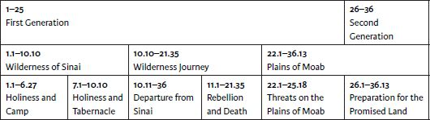
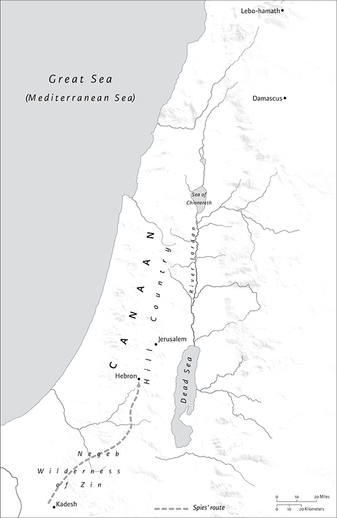
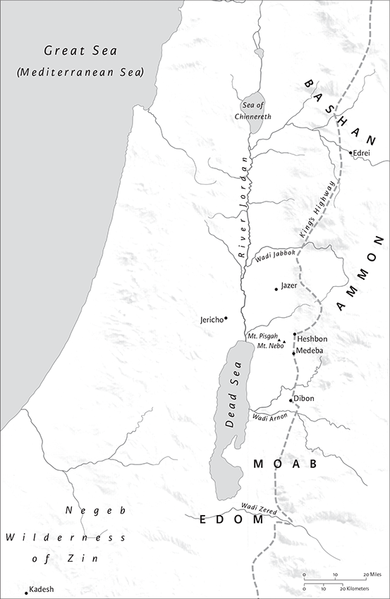
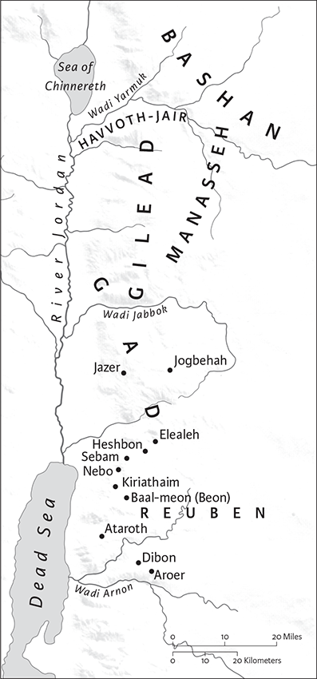
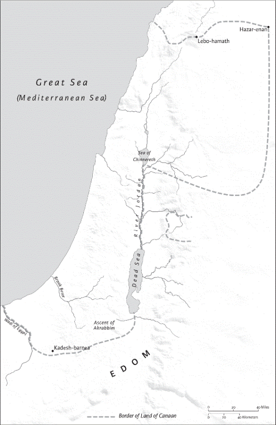

Numbers
Name and Contents
Numbers is the fourth book of the Pentateuch or Torah. Two titles are associated with the book. The title, “Numbers,” derives from the Vulgate (Numeri) and the Septuagint (Arithmoi); the title “In the wilderness” (Heb Bemidbar) comes from the Masoretic Text, where pentateuchal books are named after a significant initial word. The distinct names suggest separate themes with divergent literary structure. “Numbers” accentuates the two accounts of the census of the Israelite people, which divide the book between the first (chs 1–25) and second (chs 26–36) generation of Israelites to leave Egypt. “In the wilderness” focuses on the theme of the journey from Mount Sinai to the Promised Land, which yields a three‐part structure to the book: Chapters 1.1–10.10 contain descriptions of the wilderness camp; chs 10.11–21.35 tell of the tragic wilderness journey of the first generation; and chs 22.1–36.13 describe the second generation of Israelites on the plains of Moab as they prepare for entry into the Promised Land. The following diagram illustrates this overlapping structure:

The top row highlights the two‐part structure that emerges from the census of the first and second generations; the middle row clarifies the three‐part geographical structure of the wilderness journey; and the bottom row breaks down the book into smaller thematic units.
The book of Numbers is closely related to the events at Mount Sinai narrated in Exodus and Leviticus, and to the teaching of Moses in Deuteronomy. Numbers continues the earlier setting of Sinai in the opening divine speech to Moses: “Yahweh spoke to Moses in the wilderness of Sinai, in the tent of meeting, on the first day of the second month, in the second year after they had come out of the land of Egypt” (1.1). The instruction from the tent of meeting ties Numbers to Leviticus, where Yahweh also spoke to Moses, also from the tent of meeting (Lev 1.1). Numbers recounts the journey of the Israelites from the “wilderness of Sinai” to the “plains of Moab,” located on the border of the Promised Land. It concludes with the summary statement: “These are the commandments and the ordinances that Yahweh commanded through Moses to the Israelites in the plains of Moab by the Jordan at Jericho” (36.13); this setting of Moab ties Numbers to Deuteronomy, where Moses replaces Yahweh in instructing the Israelites in divine law: “Beyond the Jordan in the land of Moab, Moses undertook to expound this law as follows” (Deut 1.5). Thus, the introduction (1.1) of Numbers and its conclusion (36.13) link the Priestly legislation in Leviticus with the laws in Deuteronomy, helping to bring together the two law collections into a single Torah, even though each book contains distinct and even conflicting legislation on the sanctuary, the priesthood, and religious practice.
The book of Numbers presents an imagined past in which the life of faith is a rite of passage that requires the Israelite people to follow God through the wilderness toward the goal of reaching the Promised Land. Numbers narrates the journey from Sinai to Moab, which takes place over a forty‐year period and spans two generations (32.13). The first generation experienced the Exodus from Egypt and received the Priestly legislation via Moses in Leviticus; they die on the wilderness journey as a result of rebellion against Yahweh and Moses, when they fear to enter the Promised Land (chs 13–14). The second generation did not experience the Exodus firsthand and did not receive direct revelation from Yahweh at Mount Sinai; they take center stage at the close of the book of Numbers, as they prepare to enter the Promised Land (26.63–65). The book of Deuteronomy narrates the instruction that they will receive from Moses (1.35,39).
Authorship, Date of Composition, and Contents
As in other parts of the Torah, the authors of Numbers are anonymous, and the composition of the book took place over an extended time, from the period of the monarchy into the postexilic era. The book contains three distinct bodies of literature: independent poems and records; non‐Priestly literature about the wilderness journey; and Priestly literature and law from several different authors.
Independent poems and liturgies are also woven throughout the book of Numbers, including the priestly blessing (6.24–26) at the conclusion of the laws about camp defilement (chs 5–6); the song of the ark (10.35–36) at the outset of the wilderness journey (chs 11–21); an excerpt from the “Book of the Wars of Yahweh” (21.14–15), the song of the well (21.17–18) and the ballad over Heshbon (21.27–30) at the end of the wilderness journey; and the oracles of Balaam (23.7–10,18–24; 24.3–9,15–24) within the story of Balak king of Edom’s desire to curse Israel. The poems are difficult to date and likely do not all derive from the same period, but some may reach back to Israel’s earliest history (e.g., the song of the ark and the “Book of the Wars of Yahweh”). Material that likely originates from the monarchic period includes travel records (21.10–20; parts of ch 33), inheritance lists (parts of ch 32), a ritual etiology (21.4–9), as well laws concerning restitution (5.5–10), the wife suspected of adultery (5.11–28), homicide (35.9–15), and the nazirite vow (6.1–22). These independent laws and liturgies are known to the later writers, who incorporate them in the non‐Priestly and Priestly composition.
The camp legislation (chs 1–10) centers on the tabernacle first introduced in the Priestly account of revelation at Mount Sinai (Ex 25–31; 35–40). Imagined at the center of the camp, the tabernacle, where God’s presence dwelled (Ex 40.34–38), establishes the theme of holiness that organizes this unit. The holiness of the tabernacle requires careful distribution of the tribes in the camp (ch 2) along with the need for the Levites to protect the sanctuary (chs 3–4); the camp must also be protected from defilement with laws that regulate human interaction (chs 5–6); the tribes provide dedication offerings for the tabernacle (chs 7–8); and religious festivals associated with the tabernacle are described (9.1–10.10).
Priestly authors also present a version of the wilderness journey (10.11–22.1). The tribes march from Sinai in a military formation with the tabernacle at the center (10.11–29); the first generation loses the Promised Land when they misjudge the land as a place that eats its inhabitants (parts of chs 13–14); the conflict over leadership results in the divine support of Aaron and his sons as priests (parts of chs 16–18); and the revelation of laws provides guidelines for worship in the Promised Land (chs 15,18,19).
The laws at the close of the book (chs 26–36) are also dominated by Priestly teaching on a variety of issues: the inheritance of daughters (27.12–23; 36.1–12); rules for fulfilling vows (ch 30); the danger of Midianite intermarriage (31.6–18); war (ch 31); prescribed offerings for various holy days (chs 28–29); levitical cities of asylum (35.1–15); and the distribution of the land (parts of ch 32 and 34).
The Priestly literature in the Torah is not unified, and reflects the work of different Priestly authors over an extended period of time. For example, the census of the first generation (ch 1) is presented as the fulfillment of the divine command at Sinai (Ex 30.11–16), even though an earlier census is described in Ex 38.25–28; the setting up of the tabernacle in 7.1 repeats an event that takes place in Ex 40.17; and the appearance of God in the sanctuary (7.89) also repeats earlier events (Ex 40.34–38; Lev 9.22). Numbers also contains Priestly themes not found in the Priestly material in Exodus and Leviticus, including the emphasis on war in the census (chs 1) as compared to the aim of the earlier census to collect material for the construction of the tabernacle (Ex 38.11–16; 38.25–28), and the separation of the Aaronide priests and Levites in Numbers(chs 1–4) as compared to the absence of this distinction in Exodus or Leviticus. This suggests that the Priestly author(s) of Numbers are different from, and by and large later than, those in Exodus and Leviticus.
The Priestly material in Numbers may include limited material from the monarchical period, such as the laws of vowing (30) or the cities of asylum (35); most of this material, however, reflects the religious organization of the Second Temple period with the rise of the high priests and the distinction between the Aaronide priests and the Levites. The progression of the wilderness journey from Mount Sinai toward the Promised Land provides organization and a unified plot to the Priestly literature in Numbers.
Central Themes and Interpretation.
The central themes of the book of Numbers include the divine promises of nationhood and land; the holiness of God and its influence in ritual practice; the formation of covenant community along with its leadership and ethical requirements; and the wilderness journey as the intergenerational story of rebellion and hope in reaching the promised land.
Thomas B. Dozeman
1 The Lord spoke to Moses in the wilderness of Sinai, in the tent of meeting, on the first day of the second month, in the second year after they had come out of the land of Egypt, saying: 2Take a census of the whole congregation of Israelites, in their clans, by ancestral houses, according to the number of names, every male individually; 3from twenty years old and upward, everyone in Israel able to go to war. You and Aaron shall enroll them, company by company. 4A man from each tribe shall be with you, each man the head of his ancestral house. 5These are the names of the men who shall assist you:
From Reuben, Elizur son of Shedeur.
6From Simeon, Shelumiel son of Zurishaddai.
7From Judah, Nahshon son of Amminadab.
8From Issachar, Nethanel son of Zuar.
9From Zebulun, Eliab son of Helon.
10From the sons of Joseph:
from Ephraim, Elishama son of Ammihud;
from Manasseh, Gamaliel son of Pedahzur.
11From Benjamin, Abidan son of Gideoni.
12From Dan, Ahiezer son of Ammishaddai.
13From Asher, Pagiel son of Ochran.
14From Gad, Eliasaph son of Deuel.
15From Naphtali, Ahira son of Enan.
16These were the ones chosen from the congregation, the leaders of their ancestral tribes, the heads of the divisions of Israel.
17Moses and Aaron took these men who had been designated by name, 18and on the first day of the second month they assembled the whole congregation together. They registered themselves in their clans, by their ancestral houses, according to the number of names from twenty years old and upward, individually, 19as the Lord commanded Moses. So he enrolled them in the wilderness of Sinai.
20The descendants of Reuben, Israel’s firstborn, their lineage, in their clans, by their ancestral houses, according to the number of names, individually, every male from twenty years old and upward, everyone able to go to war: 21those enrolled of the tribe of Reuben were forty‐six thousand five hundred.
22The descendants of Simeon, their lineage, in their clans, by their ancestral houses, those of them that were numbered, according to the number of names, individually, every male from twenty years old and upward, everyone able to go to war: 23those enrolled of the tribe of Simeon were fifty‐nine thousand three hundred.
24The descendants of Gad, their lineage, in their clans, by their ancestral houses, according to the number of the names, from twenty years old and upward, everyone able to go to war: 25those enrolled of the tribe of Gad were forty‐five thousand six hundred fifty.
26The descendants of Judah, their lineage, in their clans, by their ancestral houses, according to the number of names, from twenty years old and upward, everyone able to go to war: 27those enrolled of the tribe of Judah were seventy‐four thousand six hundred.
28The descendants of Issachar, their lineage, in their clans, by their ancestral houses, according to the number of names, from twenty years old and upward, everyone able to go to war: 29those enrolled of the tribe of Issachar were fifty‐four thousand four hundred.
30The descendants of Zebulun, their lineage, in their clans, by their ancestral houses, according to the number of names, from twenty years old and upward, everyone able to go to war: 31those enrolled of the tribe of Zebulun were fifty‐seven thousand four hundred.
32The descendants of Joseph, namely, the descendants of Ephraim, their lineage, in their clans, by their ancestral houses, according to the number of names, from twenty years old and upward, everyone able to go to war: 33those enrolled of the tribe of Ephraim were forty thousand five hundred.
34The descendants of Manasseh, their lineage, in their clans, by their ancestral houses, according to the number of names, from twenty years old and upward, everyone able to go to war: 35those enrolled of the tribe of Manasseh were thirty‐two thousand two hundred.
36The descendants of Benjamin, their lineage, in their clans, by their ancestral houses, according to the number of names, from twenty years old and upward, everyone able to go to war: 37those enrolled of the tribe of Benjamin were thirty‐five thousand four hundred.
38The descendants of Dan, their lineage, in their clans, by their ancestral houses, according to the number of names, from twenty years old and upward, everyone able to go to war: 39those enrolled of the tribe of Dan were sixty‐two thousand seven hundred.
40The descendants of Asher, their lineage, in their clans, by their ancestral houses, according to the number of names, from twenty years old and upward, everyone able to go to war: 41those enrolled of the tribe of Asher were forty‐one thousand five hundred.
42The descendants of Naphtali, their lineage, in their clans, by their ancestral houses, according to the number of names, from twenty years old and upward, everyone able to go to war: 43those enrolled of the tribe of Naphtali were fifty‐three thousand four hundred.
44These are those who were enrolled, whom Moses and Aaron enrolled with the help of the leaders of Israel, twelve men, each representing his ancestral house. 45So the whole number of the Israelites, by their ancestral houses, from twenty years old and upward, everyone able to go to war in Israel— 46their whole number was six hundred three thousand five hundred fifty. 47The Levites, however, were not numbered by their ancestral tribe along with them.
48The Lord had said to Moses: 49Only the tribe of Levi you shall not enroll, and you shall not take a census of them with the other Israelites. 50Rather you shall appoint the Levites over the tabernacle of the covenant,a and over all its equipment, and over all that belongs to it; they are to carry the tabernacle and all its equipment, and they shall tend it, and shall camp around the tabernacle. 51When the tabernacle is to set out, the Levites shall take it down; and when the tabernacle is to be pitched, the Levites shall set it up. And any outsider who comes near shall be put to death. 52The other Israelites shall camp in their respective regimental camps, by companies; 53but the Levites shall camp around the tabernacle of the covenant,a that there may be no wrath on the congregation of the Israelites; and the Levites shall perform the guard duty of the tabernacle of the covenant.a54The Israelites did so; they did just as the Lord commanded Moses.
2 The Lord spoke to Moses and Aaron, saying: 2The Israelites shall camp each in their respective regiments, under ensigns by their ancestral houses; they shall camp facing the tent of meeting on every side. 3Those to camp on the east side toward the sunrise shall be of the regimental encampment of Judah by companies. The leader of the people of Judah shall be Nahshon son of Amminadab, 4with a company as enrolled of seventyfour thousand six hundred. 5Those to camp next to him shall be the tribe of Issachar. The leader of the Issacharites shall be Nethanel son of Zuar, 6with a company as enrolled of fifty‐four thousand four hundred. 7Then the tribe of Zebulun: The leader of the Zebulunites shall be Eliab son of Helon, 8with a company as enrolled of fifty‐seven thousand four hundred. 9The total enrollment of the camp of Judah, by companies, is one hundred eighty‐six thousand four hundred. They shall set out first on the march.
10On the south side shall be the regimental encampment of Reuben by companies. The leader of the Reubenites shall be Elizur son of Shedeur, 11with a company as enrolled of forty‐six thousand five hundred. 12And those to camp next to him shall be the tribe of Simeon. The leader of the Simeonites shall be Shelumiel son of Zurishaddai, 13with a company as enrolled of fifty‐nine thousand three hundred. 14Then the tribe of Gad: The leader of the Gadites shall be Eliasaph son of Reuel, 15with a company as enrolled of forty‐five thousand six hundred fifty. 16The total enrollment of the camp of Reuben, by companies, is one hundred fifty‐one thousand four hundred fifty. They shall set out second.
17The tent of meeting, with the camp of the Levites, shall set out in the center of the camps; they shall set out just as they camp, each in position, by their regiments.
18On the west side shall be the regimental encampment of Ephraim by companies. The leader of the people of Ephraim shall be Elishama son of Ammihud, 19with a company as enrolled of forty thousand five hundred. 20Next to him shall be the tribe of Manasseh. The leader of the people of Manasseh shall be Gamaliel son of Pedahzur, 21with a company as enrolled of thirty‐two thousand two hundred. 22Then the tribe of Benjamin: The leader of the Benjaminites shall be Abidan son of Gideoni, 23with a company as enrolled of thirty‐five thousand four hundred. 24The total enrollment of the camp of Ephraim, by companies, is one hundred eight thousand one hundred. They shall set out third on the march.
25On the north side shall be the regimental encampment of Dan by companies. The leader of the Danites shall be Ahiezer son of Ammishaddai, 26with a company as enrolled of sixty‐two thousand seven hundred. 27Those to camp next to him shall be the tribe of Asher. The leader of the Asherites shall be Pagiel son of Ochran, 28with a company as enrolled of forty‐one thousand five hundred. 29Then the tribe of Naphtali: The leader of the Naphtalites shall be Ahira son of Enan, 30with a company as enrolled of fifty‐three thousand four hundred. 31The total enrollment of the camp of Dan is one hundred fifty‐seven thousand six hundred. They shall set out last, by companies.a
32This was the enrollment of the Israelites by their ancestral houses; the total enrollment in the camps by their companies was six hundred three thousand five hundred fifty. 33Just as the Lord had commanded Moses, the Levites were not enrolled among the other Israelites.
34The Israelites did just as the Lord had commanded Moses: They camped by regiments, and they set out the same way, everyone by clans, according to ancestral houses.
3 This is the lineage of Aaron and Moses at the time when the Lord spoke with Moses on Mount Sinai. 2These are the names of the sons of Aaron: Nadab the firstborn, and Abihu, Eleazar, and Ithamar; 3these are the names of the sons of Aaron, the anointed priests, whom he ordained to minister as priests. 4Nadab and Abihu died before the Lord when they offered unholy fire before the Lord in the wilderness of Sinai, and they had no children. Eleazar and Ithamar served as priests in the lifetime of their father Aaron.
5Then the Lord spoke to Moses, saying: 6Bring the tribe of Levi near, and set them before Aaron the priest, so that they may assist him. 7They shall perform duties for him and for the whole congregation in front of the tent of meeting, doing service at the tabernacle; 8they shall be in charge of all the furnishings of the tent of meeting, and attend to the duties for the Israelites as they do service at the tabernacle. 9You shall give the Levites to Aaron and his descendants; they are unreservedly given to him from among the Israelites. 10But you shall make a register of Aaron and his descendants; it is they who shall attend to the priesthood, and any outsider who comes near shall be put to death.
11Then the Lord spoke to Moses, saying: 12I hereby accept the Levites from among the Israelites as substitutes for all the firstborn that open the womb among the Israelites. The Levites shall be mine, 13for all the firstborn are mine; when I killed all the firstborn in the land of Egypt, I consecrated for my own all the firstborn in Israel, both human and animal; they shall be mine. I am the Lord.
14Then the Lord spoke to Moses in the wilderness of Sinai, saying: 15Enroll the Levites by ancestral houses and by clans. You shall enroll every male from a month old and upward. 16So Moses enrolled them according to the word of the Lord, as he was commanded. 17The following were the sons of Levi, by their names: Gershon, Kohath, and Merari. 18These are the names of the sons of Gershon by their clans: Libni and Shimei. 19The sons of Kohath by their clans: Amram, Izhar, Hebron, and Uzziel. 20The sons of Merari by their clans: Mahli and Mushi. These are the clans of the Levites, by their ancestral houses.
21To Gershon belonged the clan of the Libnites and the clan of the Shimeites; these were the clans of the Gershonites. 22Their enrollment, counting all the males from a month old and upward, was seven thousand five hundred. 23The clans of the Gershonites were to camp behind the tabernacle on the west, 24with Eliasaph son of Lael as head of the ancestral house of the Gershonites. 25The responsibility of the sons of Gershon in the tent of meeting was to be the tabernacle, the tent with its covering, the screen for the entrance of the tent of meeting, 26the hangings of the court, the screen for the entrance of the court that is around the tabernacle and the altar, and its cords—all the service pertaining to these.
27To Kohath belonged the clan of the Amramites, the clan of the Izharites, the clan of the Hebronites, and the clan of the Uzzielites; these are the clans of the Kohathites. 28Counting all the males, from a month old and upward, there were eight thousand six hundred, attending to the duties of the sanctuary. 29The clans of the Kohathites were to camp on the south side of the tabernacle, 30with Elizaphan son of Uzziel as head of the ancestral house of the clans of the Kohathites. 31Their responsibility was to be the ark, the table, the lampstand, the altars, the vessels of the sanctuary with which the priests minister, and the screen—all the service pertaining to these. 32Eleazar son of Aaron the priest was to be chief over the leaders of the Levites, and to have oversight of those who had charge of the sanctuary.
33To Merari belonged the clan of the Mahlites and the clan of the Mushites: these are the clans of Merari. 34Their enrollment, counting all the males from a month old and upward, was six thousand two hundred. 35The head of the ancestral house of the clans of Merari was Zuriel son of Abihail; they were to camp on the north side of the tabernacle. 36The responsibility assigned to the sons of Merari was to be the frames of the tabernacle, the bars, the pillars, the bases, and all their accessories—all the service pertaining to these; 37also the pillars of the court all around, with their bases and pegs and cords.
38Those who were to camp in front of the tabernacle on the east—in front of the tent of meeting toward the east—were Moses and Aaron and Aaron’s sons, having charge of the rites within the sanctuary, whatever had to be done for the Israelites; and any outsider who came near was to be put to death. 39The total enrollment of the Levites whom Moses and Aaron enrolled at the commandment of the Lord, by their clans, all the males from a month old and upward, was twenty‐two thousand.
40Then the Lord said to Moses: Enroll all the firstborn males of the Israelites, from a month old and upward, and count their names. 41But you shall accept the Levites for me—I am the Lord—as substitutes for all the firstborn among the Israelites, and the livestock of the Levites as substitutes for all the firstborn among the livestock of the Israelites. 42So Moses enrolled all the firstborn among the Israelites, as the Lord commanded him. 43The total enrollment, all the firstborn males from a month old and upward, counting the number of names, was twenty‐two thousand two hundred seventythree.
44Then the Lord spoke to Moses, saying: 45Accept the Levites as substitutes for all the firstborn among the Israelites, and the livestock of the Levites as substitutes for their livestock; and the Levites shall be mine. I am the Lord. 46As the price of redemption of the two hundred seventy‐three of the firstborn of the Israelites, over and above the number of the Levites, 47you shall accept five shekels apiece, reckoning by the shekel of the sanctuary, a shekel of twenty gerahs. 48Give to Aaron and his sons the money by which the excess number of them is redeemed. 49So Moses took the redemption money from those who were over and above those redeemed by the Levites; 50from the firstborn of the Israelites he took the money, one thousand three hundred sixty‐five shekels, reckoned by the shekel of the sanctuary; 51and Moses gave the redemption money to Aaron and his sons, according to the word of the Lord, as the Lord had commanded Moses.
4 The Lord spoke to Moses and Aaron, saying: 2Take a census of the Kohathites separate from the other Levites, by their clans and their ancestral houses, 3from thirty years old up to fifty years old, all who qualify to do work relating to the tent of meeting. 4The service of the Kohathites relating to the tent of meeting concerns the most holy things.
5When the camp is to set out, Aaron and his sons shall go in and take down the screening curtain, and cover the ark of the covenanta with it; 6then they shall put on it a covering of fine leather,b and spread over that a cloth all of blue, and shall put its poles in place. 7Over the table of the bread of the Presence they shall spread a blue cloth, and put on it the plates, the dishes for incense, the bowls, and the flagons for the drink offering; the regular bread also shall be on it; 8then they shall spread over them a crimson cloth, and cover it with a covering of fine leather,b and shall put its poles in place. 9They shall take a blue cloth, and cover the lampstand for the light, with its lamps, its snuffers, its trays, and all the vessels for oil with which it is supplied; 10and they shall put it with all its utensils in a covering of fine leather,a and put it on the carrying frame. 11Over the golden altar they shall spread a blue cloth, and cover it with a covering of fine leather,a and shall put its poles in place; 12and they shall take all the utensils of the service that are used in the sanctuary, and put them in a blue cloth, and cover them with a covering of fine leather,a and put them on the carrying frame. 13They shall take away the ashes from the altar, and spread a purple cloth over it; 14and they shall put on it all the utensils of the altar, which are used for the service there, the firepans, the forks, the shovels, and the basins, all the utensils of the altar; and they shall spread on it a covering of fine leather,a and shall put its poles in place. 15When Aaron and his sons have finished covering the sanctuary and all the furnishings of the sanctuary, as the camp sets out, after that the Kohathites shall come to carry these, but they must not touch the holy things, or they will die. These are the things of the tent of meeting that the Kohathites are to carry.
16Eleazar son of Aaron the priest shall have charge of the oil for the light, the fragrant incense, the regular grain offering, and the anointing oil, the oversight of all the tabernacle and all that is in it, in the sanctuary and in its utensils.
17Then the Lord spoke to Moses and Aaron, saying: 18You must not let the tribe of the clans of the Kohathites be destroyed from among the Levites. 19This is how you must deal with them in order that they may live and not die when they come near to the most holy things: Aaron and his sons shall go in and assign each to a particular task or burden. 20But the Kohathitesb must not go in to look on the holy things even for a moment; otherwise they will die.
21Then the Lord spoke to Moses, saying: 22Take a census of the Gershonites also, by their ancestral houses and by their clans; 23from thirty years old up to fifty years old you shall enroll them, all who qualify to do work in the tent of meeting. 24This is the service of the clans of the Gershonites, in serving and bearing burdens: 25They shall carry the curtains of the tabernacle, and the tent of meeting with its covering, and the outer covering of fine leathera that is on top of it, and the screen for the entrance of the tent of meeting, 26and the hangings of the court, and the screen for the entrance of the gate of the court that is around the tabernacle and the altar, and their cords, and all the equipment for their service; and they shall do all that needs to be done with regard to them. 27All the service of the Gershonites shall be at the command of Aaron and his sons, in all that they are to carry, and in all that they have to do; and you shall assign to their charge all that they are to carry. 28This is the service of the clans of the Gershonites relating to the tent of meeting, and their responsibilities are to be under the oversight of Ithamar son of Aaron the priest.
29As for the Merarites, you shall enroll them by their clans and their ancestral houses; 30from thirty years old up to fifty years old you shall enroll them, everyone who qualifies to do the work of the tent of meeting. 31This is what they are charged to carry, as the whole of their service in the tent of meeting: the frames of the tabernacle, with its bars, pillars, and bases, 32and the pillars of the court all around with their bases, pegs, and cords, with all their equipment and all their related service; and you shall assign by name the objects that they are required to carry. 33This is the service of the clans of the Merarites, the whole of their service relating to the tent of meeting, under the hand of Ithamar son of Aaron the priest.
34So Moses and Aaron and the leaders of the congregation enrolled the Kohathites, by their clans and their ancestral houses, 35from thirty years old up to fifty years old, everyone who qualified for work relating to the tent of meeting; 36and their enrollment by clans was two thousand seven hundred fifty. 37This was the enrollment of the clans of the Kohathites, all who served at the tent of meeting, whom Moses and Aaron enrolled according to the commandment of the Lord by Moses.
38The enrollment of the Gershonites, by their clans and their ancestral houses, 39from thirty years old up to fifty years old, everyone who qualified for work relating to the tent of meeting— 40their enrollment by their clans and their ancestral houses was two thousand six hundred thirty. 41This was the enrollment of the clans of the Gershonites, all who served at the tent of meeting, whom Moses and Aaron enrolled according to the commandment of the Lord.
42The enrollment of the clans of the Merarites, by their clans and their ancestral houses, 43from thirty years old up to fifty years old, everyone who qualified for work relating to the tent of meeting— 44their enrollment by their clans was three thousand two hundred. 45This is the enrollment of the clans of the Merarites, whom Moses and Aaron enrolled according to the commandment of the Lord by Moses.
46All those who were enrolled of the Levites, whom Moses and Aaron and the leaders of Israel enrolled, by their clans and their ancestral houses, 47from thirty years old up to fifty years old, everyone who qualified to do the work of service and the work of bearing burdens relating to the tent of meeting, 48their enrollment was eight thousand five hundred eighty. 49According to the commandment of the Lord through Moses they were appointed to their several tasks of serving or carrying; thus they were enrolled by him, as the Lord commanded Moses.
5 The Lord spoke to Moses, saying: 2Command the Israelites to put out of the camp everyone who is leprous,a or has a discharge, and everyone who is unclean through contact with a corpse; 3you shall put out both male and female, putting them outside the camp; they must not defile their camp, where I dwell among them. 4The Israelites did so, putting them outside the camp; as the Lord had spoken to Moses, so the Israelites did.
5The Lord spoke to Moses, saying: 6Speak to the Israelites: When a man or a woman wrongs another, breaking faith with the Lord, that person incurs guilt 7and shall confess the sin that has been committed. The person shall make full restitution for the wrong, adding one‐fifth to it, and giving it to the one who was wronged. 8If the injured party has no next of kin to whom restitution may be made for the wrong, the restitution for wrong shall go to the Lord for the priest, in addition to the ram of atonement with which atonement is made for the guilty party. 9Among all the sacred donations of the Israelites, every gift that they bring to the priest shall be his. 10The sacred donations of all are their own; whatever anyone gives to the priest shall be his.
11The Lord spoke to Moses, saying: 12Speak to the Israelites and say to them: If any man’s wife goes astray and is unfaithful to him, 13if a man has had intercourse with her but it is hidden from her husband, so that she is undetected though she has defiled herself, and there is no witness against her since she was not caught in the act; 14if a spirit of jealousy comes on him, and he is jealous of his wife who has defiled herself; or if a spirit of jealousy comes on him, and he is jealous of his wife, though she has not defiled herself; 15then the man shall bring his wife to the priest. And he shall bring the offering required for her, one‐tenth of an ephah of barley flour. He shall pour no oil on it and put no frankincense on it, for it is a grain offering of jealousy, a grain offering of remembrance, bringing iniquity to remembrance.
16Then the priest shall bring her near, and set her before the Lord; 17the priest shall take holy water in an earthen vessel, and take some of the dust that is on the floor of the tabernacle and put it into the water. 18The priest shall set the woman before the Lord, dishevel the woman’s hair, and place in her hands the grain offering of remembrance, which is the grain offering of jealousy. In his own hand the priest shall have the water of bitterness that brings the curse. 19Then the priest shall make her take an oath, saying, “If no man has lain with you, if you have not turned aside to uncleanness while under your husband’s authority, be immune to this water of bitterness that brings the curse.
20But if you have gone astray while under your husband’s authority, if you have defiled yourself and some man other than your husband has had intercourse with you,” 21—let the priest make the woman take the oath of the curse and say to the woman—”the Lord make you an execration and an oath among your people, when the Lord makes your uterus drop, your womb discharge; 22now may this water that brings the curse enter your bowels and make your womb discharge, your uterus drop!” And the woman shall say, “Amen. Amen.”
23Then the priest shall put these curses in writing, and wash them off into the water of bitterness. 24He shall make the woman drink the water of bitterness that brings the curse, and the water that brings the curse shall enter her and cause bitter pain. 25The priest shall take the grain offering of jealousy out of the woman’s hand, and shall elevate the grain offering before the Lord and bring it to the altar; 26and the priest shall take a handful of the grain offering, as its memorial portion, and turn it into smoke on the altar, and afterward shall make the woman drink the water. 27When he has made her drink the water, then, if she has defiled herself and has been unfaithful to her husband, the water that brings the curse shall enter into her and cause bitter pain, and her womb shall discharge, her uterus drop, and the woman shall become an execration among her people. 28But if the woman has not defiled herself and is clean, then she shall be immune and be able to conceive children.
29This is the law in cases of jealousy, when a wife, while under her husband’s authority, goes astray and defiles herself, 30or when a spirit of jealousy comes on a man and he is jealous of his wife; then he shall set the woman before the Lord, and the priest shall apply this entire law to her. 31The man shall be free from iniquity, but the woman shall bear her iniquity.
6 The Lord spoke to Moses, saying: 2Speak to the Israelites and say to them: When either men or women make a special vow, the vow of a nazirite,a to separate themselves to the Lord, 3they shall separate themselves from wine and strong drink; they shall drink no wine vinegar or other vinegar, and shall not drink any grape juice or eat grapes, fresh or dried. 4All their days as naziritesb they shall eat nothing that is produced by the grapevine, not even the seeds or the skins.
5All the days of their nazirite vow no razor shall come upon the head; until the time is completed for which they separate themselves to the Lord, they shall be holy; they shall let the locks of the head grow long.
6All the days that they separate themselves to the Lord they shall not go near a corpse. 7Even if their father or mother, brother or sister, should die, they may not defile themselves; because their consecration to God is upon the head. 8All their days as naziritesb they are holy to the Lord.
9If someone dies very suddenly nearby, defiling the consecrated head, then they shall shave the head on the day of their cleansing; on the seventh day they shall shave it. 10On the eighth day they shall bring two turtledoves or two young pigeons to the priest at the entrance of the tent of meeting, 11and the priest shall offer one as a sin offering and the other as a burnt offering, and make atonement for them, because they incurred guilt by reason of the corpse. They shall sanctify the head that same day, 12and separate themselves to the Lord for their days as nazirites,b and bring a male lamb a year old as a guilt offering. The former time shall be void, because the consecrated head was defiled.
13This is the law for the naziritesb when the time of their consecration has been completed: they shall be brought to the entrance of the tent of meeting, 14and they shall offer their gift to the Lord, one male lamb a year old without blemish as a burnt offering, one ewe lamb a year old without blemish as a sin offering, one ram without blemish as an offering of wellbeing, 15and a basket of unleavened bread, cakes of choice flour mixed with oil and unleavened wafers spread with oil, with their grain offering and their drink offerings. 16The priest shall present them before the Lord and offer their sin offering and burnt offering, 17and shall offer the ram as a sacrifice of well‐being to the Lord, with the basket of unleavened bread; the priest also shall make the accompanying grain offering and drink offering. 18Then the naziritesa shall shave the consecrated head at the entrance of the tent of meeting, and shall take the hair from the consecrated head and put it on the fire under the sacrifice of well‐being. 19The priest shall take the shoulder of the ram, when it is boiled, and one unleavened cake out of the basket, and one unleavened wafer, and shall put them in the palms of the nazirites,a after they have shaved the consecrated head. 20Then the priest shall elevate them as an elevation offering before the Lord; they are a holy portion for the priest, together with the breast that is elevated and the thigh that is offered. After that the naziritesa may drink wine.
21This is the law for the naziritesa who take a vow. Their offering to the Lord must be in accordance with the naziriteb vow, apart from what else they can afford. In accordance with whatever vow they take, so they shall do, following the law for their consecration.
22The Lord spoke to Moses, saying:
23Speak to Aaron and his sons, saying, Thus you shall bless the Israelites: You shall say to them,
27So they shall put my name on the Israelites, and I will bless them.
7 On the day when Moses had finished setting up the tabernacle, and had anointed and consecrated it with all its furnishings, and had anointed and consecrated the altar with all its utensils, 2the leaders of Israel, heads of their ancestral houses, the leaders of the tribes, who were over those who were enrolled, made offerings. 3They brought their offerings before the Lord, six covered wagons and twelve oxen, a wagon for every two of the leaders, and for each one an ox; they presented them before the tabernacle. 4Then the Lord said to Moses: 5Accept these from them, that they may be used in doing the service of the tent of meeting, and give them to the Levites, to each according to his service. 6So Moses took the wagons and the oxen, and gave them to the Levites. 7Two wagons and four oxen he gave to the Gershonites, according to their service; 8and four wagons and eight oxen he gave to the Merarites, according to their service, under the direction of Ithamar son of Aaron the priest. 9But to the Kohathites he gave none, because they were charged with the care of the holy things that had to be carried on the shoulders.
10The leaders also presented offerings for the dedication of the altar at the time when it was anointed; the leaders presented their offering before the altar. 11The Lord said to Moses: They shall present their offerings, one leader each day, for the dedication of the altar.
12The one who presented his offering the first day was Nahshon son of Amminadab, of the tribe of Judah; 13his offering was one silver plate weighing one hundred thirty shekels, one silver basin weighing seventy shekels, according to the shekel of the sanctuary, both of them full of choice flour mixed with oil for a grain offering; 14one golden dish weighing ten shekels, full of incense; 15one young bull, one ram, one male lamb a year old, for a burnt offering; 16one male goat for a sin offering; 17and for the sacrifice of wellbeing, two oxen, five rams, five male goats, and five male lambs a year old. This was the offering of Nahshon son of Amminadab.
18On the second day Nethanel son of Zuar, the leader of Issachar, presented an offering; 19he presented for his offering one silver plate weighing one hundred thirty shekels, one silver basin weighing seventy shekels, according to the shekel of the sanctuary, both of them full of choice flour mixed with oil for a grain offering; 20one golden dish weighing ten shekels, full of incense; 21one young bull, one ram, one male lamb a year old, as a burnt offering; 22one male goat as a sin offering; 23and for the sacrifice of well‐being, two oxen, five rams, five male goats, and five male lambs a year old. This was the offering of Nethanel son of Zuar.
24On the third day Eliab son of Helon, the leader of the Zebulunites: 25his offering was one silver plate weighing one hundred thirty shekels, one silver basin weighing seventy shekels, according to the shekel of the sanctuary, both of them full of choice flour mixed with oil for a grain offering; 26one golden dish weighing ten shekels, full of incense; 27one young bull, one ram, one male lamb a year old, for a burnt offering; 28one male goat for a sin offering; 29and for the sacrifice of wellbeing, two oxen, five rams, five male goats, and five male lambs a year old. This was the offering of Eliab son of Helon.
30On the fourth day Elizur son of Shedeur, the leader of the Reubenites: 31his offering was one silver plate weighing one hundred thirty shekels, one silver basin weighing seventy shekels, according to the shekel of the sanctuary, both of them full of choice flour mixed with oil for a grain offering; 32one golden dish weighing ten shekels, full of incense; 33one young bull, one ram, one male lamb a year old, for a burnt offering; 34one male goat for a sin offering; 35and for the sacrifice of well‐being, two oxen, five rams, five male goats, and five male lambs a year old. This was the offering of Elizur son of Shedeur.
36On the fifth day Shelumiel son of Zurishaddai, the leader of the Simeonites: 37his offering was one silver plate weighing one hundred thirty shekels, one silver basin weighing seventy shekels, according to the shekel of the sanctuary, both of them full of choice flour mixed with oil for a grain offering; 38one golden dish weighing ten shekels, full of incense; 39one young bull, one ram, one male lamb a year old, for a burnt offering; 40one male goat for a sin offering; 41and for the sacrifice of well‐being, two oxen, five rams, five male goats, and five male lambs a year old. This was the offering of Shelumiel son of Zurishaddai.
42On the sixth day Eliasaph son of Deuel, the leader of the Gadites: 43his offering was one silver plate weighing one hundred thirty shekels, one silver basin weighing seventy shekels, according to the shekel of the sanctuary, both of them full of choice flour mixed with oil for a grain offering; 44one golden dish weighing ten shekels, full of incense; 45one young bull, one ram, one male lamb a year old, for a burnt offering; 46one male goat for a sin offering; 47and for the sacrifice of well‐being, two oxen, five rams, five male goats, and five male lambs a year old. This was the offering of Eliasaph son of Deuel.
48On the seventh day Elishama son of Ammihud, the leader of the Ephraimites: 49his offering was one silver plate weighing one hundred thirty shekels, one silver basin weighing seventy shekels, according to the shekel of the sanctuary, both of them full of choice flour mixed with oil for a grain offering; 50one golden dish weighing ten shekels, full of incense; 51one young bull, one ram, one male lamb a year old, for a burnt offering; 52one male goat for a sin offering; 53and for the sacrifice of well‐being, two oxen, five rams, five male goats, and five male lambs a year old. This was the offering of Elishama son of Ammihud.
54On the eighth day Gamaliel son of Pedahzur, the leader of the Manassites: 55his offering was one silver plate weighing one hundred thirty shekels, one silver basin weighing seventy shekels, according to the shekel of the sanctuary, both of them full of choice flour mixed with oil for a grain offering; 56one golden dish weighing ten shekels, full of incense; 57one young bull, one ram, one male lamb a year old, for a burnt offering; 58one male goat for a sin offering; 59and for the sacrifice of well‐being, two oxen, five rams, five male goats, and five male lambs a year old. This was the offering of Gamaliel son of Pedahzur.
60On the ninth day Abidan son of Gideoni, the leader of the Benjaminites: 61his offering was one silver plate weighing one hundred thirty shekels, one silver basin weighing seventy shekels, according to the shekel of the sanctuary, both of them full of choice flour mixed with oil for a grain offering; 62one golden dish weighing ten shekels, full of incense; 63one young bull, one ram, one male lamb a year old, for a burnt offering; 64one male goat for a sin offering; 65and for the sacrifice of well‐being, two oxen, five rams, five male goats, and five male lambs a year old. This was the offering of Abidan son of Gideoni.
66On the tenth day Ahiezer son of Ammishaddai, the leader of the Danites: 67his offering was one silver plate weighing one hundred thirty shekels, one silver basin weighing seventy shekels, according to the shekel of the sanctuary, both of them full of choice flour mixed with oil for a grain offering; 68one golden dish weighing ten shekels, full of incense; 69one young bull, one ram, one male lamb a year old, for a burnt offering; 70one male goat for a sin offering; 71and for the sacrifice of well‐being, two oxen, five rams, five male goats, and five male lambs a year old. This was the offering of Ahiezer son of Ammishaddai.
72On the eleventh day Pagiel son of Ochran, the leader of the Asherites: 73his offering was one silver plate weighing one hundred thirty shekels, one silver basin weighing seventy shekels, according to the shekel of the sanctuary, both of them full of choice flour mixed with oil for a grain offering; 74one golden dish weighing ten shekels, full of incense; 75one young bull, one ram, one male lamb a year old, for a burnt offering; 76one male goat for a sin offering; 77and for the sacrifice of well‐being, two oxen, five rams, five male goats, and five male lambs a year old. This was the offering of Pagiel son of Ochran.
78On the twelfth day Ahira son of Enan, the leader of the Naphtalites: 79his offering was one silver plate weighing one hundred thirty shekels, one silver basin weighing seventy shekels, according to the shekel of the sanctuary, both of them full of choice flour mixed with oil for a grain offering; 80one golden dish weighing ten shekels, full of incense; 81one young bull, one ram, one male lamb a year old, for a burnt offering; 82one male goat for a sin offering; 83and for the sacrifice of well‐being, two oxen, five rams, five male goats, and five male lambs a year old. This was the offering of Ahira son of Enan.
84This was the dedication offering for the altar, at the time when it was anointed, from the leaders of Israel: twelve silver plates, twelve silver basins, twelve golden dishes, 85each silver plate weighing one hundred thirty shekels and each basin seventy, all the silver of the vessels two thousand four hundred shekels according to the shekel of the sanctuary, 86the twelve golden dishes, full of incense, weighing ten shekels apiece according to the shekel of the sanctuary, all the gold of the dishes being one hundred twenty shekels; 87all the livestock for the burnt offering twelve bulls, twelve rams, twelve male lambs a year old, with their grain offering; and twelve male goats for a sin offering; 88and all the livestock for the sacrifice of well‐being twenty‐four bulls, the rams sixty, the male goats sixty, the male lambs a year old sixty. This was the dedication offering for the altar, after it was anointed.
89When Moses went into the tent of meeting to speak with the Lord,a he would hear the voice speaking to him from above the mercy seatb that was on the ark of the covenantc from between the two cherubim; thus it spoke to him.
8 The Lord spoke to Moses, saying: 2Speak to Aaron and say to him: When you set up the lamps, the seven lamps shall give light in front of the lampstand. 3Aaron did so; he set up its lamps to give light in front of the lampstand, as the Lord had commanded Moses. 4Now this was how the lampstand was made, out of hammered work of gold. From its base to its flowers, it was hammered work; according to the pattern that the Lord had shown Moses, so he made the lampstand.
5The Lord spoke to Moses, saying: 6Take the Levites from among the Israelites and cleanse them. 7Thus you shall do to them, to cleanse them: sprinkle the water of purification on them, have them shave their whole body with a razor and wash their clothes, and so cleanse themselves. 8Then let them take a young bull and its grain offering of choice flour mixed with oil, and you shall take another young bull for a sin offering. 9You shall bring the Levites before the tent of meeting, and assemble the whole congregation of the Israelites. 10When you bring the Levites before the Lord, the Israelites shall lay their hands on the Levites, 11and Aaron shall present the Levites before the Lord as an elevation offering from the Israelites, that they may do the service of the Lord. 12The Levites shall lay their hands on the heads of the bulls, and he shall offer the one for a sin offering and the other for a burnt offering to the Lord, to make atonement for the Levites. 13Then you shall have the Levites stand before Aaron and his sons, and you shall present them as an elevation offering to the Lord.
14Thus you shall separate the Levites from among the other Israelites, and the Levites shall be mine. 15Thereafter the Levites may go in to do service at the tent of meeting, once you have cleansed them and presented them as an elevation offering. 16For they are unreservedly given to me from among the Israelites; I have taken them for myself, in place of all that open the womb, the firstborn of all the Israelites. 17For all the firstborn among the Israelites are mine, both human and animal. On the day that I struck down all the firstborn in the land of Egypt I consecrated them for myself, 18but I have taken the Levites in place of all the firstborn among the Israelites. 19Moreover, I have given the Levites as a gift to Aaron and his sons from among the Israelites, to do the service for the Israelites at the tent of meeting, and to make atonement for the Israelites, in order that there may be no plague among the Israelites for coming too close to the sanctuary.
20Moses and Aaron and the whole congregation of the Israelites did with the Levites accordingly; the Israelites did with the Levites just as the Lord had commanded Moses concerning them. 21The Levites purified themselves from sin and washed their clothes; then Aaron presented them as an elevation offering before the Lord, and Aaron made atonement for them to cleanse them. 22Thereafter the Levites went in to do their service in the tent of meeting in attendance on Aaron and his sons. As the Lord had commanded Moses concerning the Levites, so they did with them.
23The Lord spoke to Moses, saying: 24This applies to the Levites: from twenty‐five years old and upward they shall begin to do duty in the service of the tent of meeting; 25and from the age of fifty years they shall retire from the duty of the service and serve no more. 26They may assist their brothers in the tent of meeting in carrying out their duties, but they shall perform no service. Thus you shall do with the Levites in assigning their duties.
9 The Lord spoke to Moses in the wilderness of Sinai, in the first month of the second year after they had come out of the land of Egypt, saying: 2Let the Israelites keep the passover at its appointed time. 3On the fourteenth day of this month, at twilight,a you shall keep it at its appointed time; according to all its statutes and all its regulations you shall keep it. 4So Moses told the Israelites that they should keep the passover. 5They kept the passover in the first month, on the fourteenth day of the month, at twilight,a in the wilderness of Sinai. Just as the Lord had commanded Moses, so the Israelites did. 6Now there were certain people who were unclean through touching a corpse, so that they could not keep the passover on that day. They came before Moses and Aaron on that day, 7and said to him, “Although we are unclean through touching a corpse, why must we be kept from presenting the Lord’s offering at its appointed time among the Israelites?” 8Moses spoke to them, “Wait, so that I may hear what the Lord will command concerning you.”
9The Lord spoke to Moses, saying:
10Speak to the Israelites, saying: Anyone of you or your descendants who is unclean through touching a corpse, or is away on a journey, shall still keep the passover to the Lord. 11In the second month on the fourteenth day, at twilight,a they shall keep it; they shall eat it with unleavened bread and bitter herbs. 12They shall leave none of it until morning, nor break a bone of it; according to all the statute for the passover they shall keep it. 13But anyone who is clean and is not on a journey, and yet refrains from keeping the passover, shall be cut off from the people for not presenting the Lord’s offering at its appointed time; such a one shall bear the consequences for the sin. 14Any alien residing among you who wishes to keep the passover to the Lord shall do so according to the statute of the passover and according to its regulation; you shall have one statute for both the resident alien and the native.
15On the day the tabernacle was set up, the cloud covered the tabernacle, the tent of the covenant;a and from evening until morning it was over the tabernacle, having the appearance of fire. 16It was always so: the cloud covered it by dayb and the appearance of fire by night. 17Whenever the cloud lifted from over the tent, then the Israelites would set out; and in the place where the cloud settled down, there the Israelites would camp. 18At the command of the Lord the Israelites would set out, and at the command of the Lord they would camp. As long as the cloud rested over the tabernacle, they would remain in camp. 19Even when the cloud continued over the tabernacle many days, the Israelites would keep the charge of the Lord, and would not set out. 20Sometimes the cloud would remain a few days over the tabernacle, and according to the command of the Lord they would remain in camp; then according to the command of the Lord they would set out. 21Sometimes the cloud would remain from evening until morning; and when the cloud lifted in the morning, they would set out, or if it continued for a day and a night, when the cloud lifted they would set out. 22Whether it was two days, or a month, or a longer time, that the cloud continued over the tabernacle, resting upon it, the Israelites would remain in camp and would not set out; but when it lifted they would set out. 23At the command of the Lord they would camp, and at the command of the Lord they would set out. They kept the charge of the Lord, at the command of the Lord by Moses.
10 The Lord spoke to Moses, saying:
2Make two silver trumpets; you shall make them of hammered work; and you shall use them for summoning the congregation, and for breaking camp. 3When both are blown, the whole congregation shall assemble before you at the entrance of the tent of meeting. 4But if only one is blown, then the leaders, the heads of the tribes of Israel, shall assemble before you. 5When you blow an alarm, the camps on the east side shall set out; 6when you blow a second alarm, the camps on the south side shall set out. An alarm is to be blown whenever they are to set out. 7But when the assembly is to be gathered, you shall blow, but you shall not sound an alarm. 8The sons of Aaron, the priests, shall blow the trumpets; this shall be a perpetual institution for you throughout your generations. 9When you go to war in your land against the adversary who oppresses you, you shall sound an alarm with the trumpets, so that you may be remembered before the Lord your God and be saved from your enemies. 10Also on your days of rejoicing, at your appointed festivals, and at the beginnings of your months, you shall blow the trumpets over your burnt offerings and over your sacrifices of wellbeing; they shall serve as a reminder on your behalf before the Lord your God: I am the Lord your God.
11In the second year, in the second month, on the twentieth day of the month, the cloud lifted from over the tabernacle of the covenant.a 12Then the Israelites set out by stages from the wilderness of Sinai, and the cloud settled down in the wilderness of Paran. 13They set out for the first time at the command of the Lord by Moses. 14The standard of the camp of Judah set out first, company by company, and over the whole company was Nahshon son of Amminadab. 15Over the company of the tribe of Issachar was Nethanel son of Zuar; 16and over the company of the tribe of Zebulun was Eliab son of Helon.
17Then the tabernacle was taken down, and the Gershonites and the Merarites, who carried the tabernacle, set out. 18Next the standard of the camp of Reuben set out, company by company; and over the whole company was Elizur son of Shedeur. 19Over the company of the tribe of Simeon was Shelumiel son of Zurishaddai, 20and over the company of the tribe of Gad was Eliasaph son of Deuel.
21Then the Kohathites, who carried the holy things, set out; and the tabernacle was set up before their arrival. 22Next the standard of the Ephraimite camp set out, company by company, and over the whole company was Elishama son of Ammihud. 23Over the company of the tribe of Manasseh was Gamaliel son of Pedahzur, 24and over the company of the tribe of Benjamin was Abidan son of Gideoni.
25Then the standard of the camp of Dan, acting as the rear guard of all the camps, set out, company by company, and over the whole company was Ahiezer son of Ammishaddai. 26Over the company of the tribe of Asher was Pagiel son of Ochran, 27and over the company of the tribe of Naphtali was Ahira son of Enan. 28This was the order of march of the Israelites, company by company, when they set out.
29Moses said to Hobab son of Reuel the Midianite, Moses’ father‐in‐law, “We are setting out for the place of which the Lord said, ‘I will give it to you’; come with us, and we will treat you well; for the Lord has promised good to Israel.” 30But he said to him, “I will not go, but I will go back to my own land and to my kindred.” 31He said, “Do not leave us, for you know where we should camp in the wilderness, and you will serve as eyes for us. 32Moreover, if you go with us, whatever good the Lord does for us, the same we will do for you.”
33So they set out from the mount of the Lord three days’ journey with the ark of the covenant of the Lord going before them three days’ journey, to seek out a resting place for them, 34the cloud of the Lord being over them by day when they set out from the camp.
35Whenever the ark set out, Moses would say,
“Arise, O Lord, let your enemies be scattered,
and your foes flee before you.”
36And whenever it came to rest, he would say,
“Return, O Lord of the ten thousand
thousands of Israel.”a
11 Now when the people complained in the hearing of the Lord about their misfortunes, the Lord heard it and his anger was kindled. Then the fire of the Lord burned against them, and consumed some outlying parts of the camp. 2But the people cried out to Moses; and Moses prayed to the Lord, and the fire abated. 3So that place was called Taberah,b because the fire of the Lord burned against them.
4The rabble among them had a strong craving; and the Israelites also wept again, and said, “If only we had meat to eat! 5We remember the fish we used to eat in Egypt for nothing, the cucumbers, the melons, the leeks, the onions, and the garlic; 6but now our strength is dried up, and there is nothing at all but this manna to look at.”
7Now the manna was like coriander seed, and its color was like the color of gum resin. 8The people went around and gathered it, ground it in mills or beat it in mortars, then boiled it in pots and made cakes of it; and the taste of it was like the taste of cakes baked with oil. 9When the dew fell on the camp in the night, the manna would fall with it.
10Moses heard the people weeping throughout their families, all at the entrances of their tents. Then the Lord became very angry, and Moses was displeased. 11So Moses said to the Lord, “Why have you treated your servant so badly? Why have I not found favor in your sight, that you lay the burden of all this people on me? 12Did I conceive all this people? Did I give birth to them, that you should say to me, ‘Carry them in your bosom, as a nurse carries a sucking child, to the land that you promised on oath to their ancestors’? 13Where am I to get meat to give to all this people? For they come weeping to me and say, ‘Give us meat to eat!’ 14I am not able to carry all this people alone, for they are too heavy for me. 15If this is the way you are going to treat me, put me to death at once—if I have found favor in your sight—and do not let me see my misery.”
16So the Lord said to Moses, “Gather for me seventy of the elders of Israel, whom you know to be the elders of the people and officers over them; bring them to the tent of meeting, and have them take their place there with you. 17I will come down and talk with you there; and I will take some of the spirit that is on you and put it on them; and they shall bear the burden of the people along with you so that you will not bear it all by yourself. 18And say to the people: Consecrate yourselves for tomorrow, and you shall eat meat; for you have wailed in the hearing of the Lord, saying, ‘If only we had meat to eat! Surely it was better for us in Egypt.’ Therefore the Lord will give you meat, and you shall eat. 19You shall eat not only one day, or two days, or five days, or ten days, or twenty days, 20but for a whole month—until it comes out of your nostrils and becomes loathsome to you—because you have rejected the Lord who is among you, and have wailed before him, saying, ‘Why did we ever leave Egypt?’” 21But Moses said, “The people I am with number six hundred thousand on foot; and you say, ‘I will give them meat, that they may eat for a whole month’! 22Are there enough flocks and herds to slaughter for them? Are there enough fish in the sea to catch for them?” 23The Lord said to Moses, “Is the Lord’s power limited?a Now you shall see whether my word will come true for you or not.”
24So Moses went out and told the people the words of the Lord; and he gathered seventy elders of the people, and placed them all around the tent. 25Then the Lord came down in the cloud and spoke to him, and took some of the spirit that was on him and put it on the seventy elders; and when the spirit rested upon them, they prophesied. But they did not do so again.
26Two men remained in the camp, one named Eldad, and the other named Medad, and the spirit rested on them; they were among those registered, but they had not gone out to the tent, and so they prophesied in the camp. 27And a young man ran and told Moses, “Eldad and Medad are prophesying in the camp.” 28And Joshua son of Nun, the assistant of Moses, one of his chosen men,a said, “My lord Moses, stop them!” 29But Moses said to him, “Are you jealous for my sake? Would that all the Lord’s people were prophets, and that the Lord would put his spirit on them!” 30And Moses and the elders of Israel returned to the camp.
31Then a wind went out from the Lord, and it brought quails from the sea and let them fall beside the camp, about a day’s journey on this side and a day’s journey on the other side, all around the camp, about two cubits deep on the ground. 32So the people worked all that day and night and all the next day, gathering the quails; the least anyone gathered was ten homers; and they spread them out for themselves all around the camp. 33But while the meat was still between their teeth, before it was consumed, the anger of the Lord was kindled against the people, and the Lord struck the people with a very great plague. 34So that place was called Kibrothhattaavah,b because there they buried the people who had the craving. 35From Kibrothhattaavah the people journeyed to Hazeroth.
12 While they were at Hazeroth, Miriam and Aaron spoke against Moses because of the Cushite woman whom he had married (for he had indeed married a Cushite woman); 2and they said, “Has the Lord spoken only through Moses? Has he not spoken through us also?” And the Lord heard it. 3Now the man Moses was very humble,c more so than anyone else on the face of the earth. 4Suddenly the Lord said to Moses, Aaron, and Miriam, “Come out, you three, to the tent of meeting.” So the three of them came out. 5Then the Lord came down in a pillar of cloud, and stood at the entrance of the tent, and called Aaron and Miriam; and they both came forward. 6And he said, “Hear my words:
Why then were you not afraid to speak against my servant Moses?” 9And the anger of the Lord was kindled against them, and he departed.
10When the cloud went away from over the tent, Miriam had become leprous,d as white as snow. And Aaron turned towards Miriam and saw that she was leprous. 11Then Aaron said to Moses, “Oh, my lord, do not punish usa for a sin that we have so foolishly committed. 12Do not let her be like one stillborn, whose flesh is half consumed when it comes out of its mother’s womb.” 13And Moses cried to the Lord, “O God, please heal her.” 14But the Lord said to Moses, “If her father had but spit in her face, would she not bear her shame for seven days? Let her be shut out of the camp for seven days, and after that she may be brought in again.” 15So Miriam was shut out of the camp for seven days; and the people did not set out on the march until Miriam had been brought in again. 16After that the people set out from Hazeroth, and camped in the wilderness of Paran.

The route of the spies in chapter 13.
13 The Lord said to Moses, 2“Send men to spy out the land of Canaan, which I am giving to the Israelites; from each of their ancestral tribes you shall send a man, every one a leader among them.” 3So Moses sent them from the wilderness of Paran, according to the command of the Lord, all of them leading men among the Israelites. 4These were their names: From the tribe of Reuben, Shammua son of Zaccur; 5from the tribe of Simeon, Shaphat son of Hori; 6from the tribe of Judah, Caleb son of Jephunneh; 7from the tribe of Issachar, Igal son of Joseph; 8from the tribe of Ephraim, Hoshea son of Nun; 9from the tribe of Benjamin, Palti son of Raphu; 10from the tribe of Zebulun, Gaddiel son of Sodi; 11from the tribe of Joseph (that is, from the tribe of Manasseh), Gaddi son of Susi; 12from the tribe of Dan, Ammiel son of Gemalli; 13from the tribe of Asher, Sethur son of Michael; 14from the tribe of Naphtali, Nahbi son of Vophsi; 15from the tribe of Gad, Geuel son of Machi. 16These were the names of the men whom Moses sent to spy out the land. And Moses changed the name of Hoshea son of Nun to Joshua.
17Moses sent them to spy out the land of Canaan, and said to them, “Go up there into the Negeb, and go up into the hill country, 18and see what the land is like, and whether the people who live in it are strong or weak, whether they are few or many, 19and whether the land they live in is good or bad, and whether the towns that they live in are unwalled or fortified, 20and whether the land is rich or poor, and whether there are trees in it or not. Be bold, and bring some of the fruit of the land.” Now it was the season of the first ripe grapes.
21So they went up and spied out the land from the wilderness of Zin to Rehob, near Lebo‐hamath. 22They went up into the Negeb, and came to Hebron; and Ahiman, Sheshai, and Talmai, the Anakites, were there. (Hebron was built seven years before Zoan in Egypt.) 23And they came to the Wadi Eshcol, and cut down from there a branch with a single cluster of grapes, and they carried it on a pole between two of them. They also brought some pomegranates and figs. 24That place was called the Wadi Eshcol,a because of the cluster that the Israelites cut down from there.
25At the end of forty days they returned from spying out the land. 26And they came to Moses and Aaron and to all the congregation of the Israelites in the wilderness of Paran, at Kadesh; they brought back word to them and to all the congregation, and showed them the fruit of the land. 27And they told him, “We came to the land to which you sent us; it flows with milk and honey, and this is its fruit. 28Yet the people who live in the land are strong, and the towns are fortified and very large; and besides, we saw the descendants of Anak there. 29The Amalekites live in the land of the Negeb; the Hittites, the Jebusites, and the Amorites live in the hill country; and the Canaanites live by the sea, and along the Jordan.”
30But Caleb quieted the people before Moses, and said, “Let us go up at once and occupy it, for we are well able to overcome it.” 31Then the men who had gone up with him said, “We are not able to go up against this people, for they are stronger than we.” 32So they brought to the Israelites an unfavorable report of the land that they had spied out, saying, “The land that we have gone through as spies is a land that devours its inhabitants; and all the people that we saw in it are of great size. 33There we saw the Nephilim (the Anakites come from the Nephilim); and to ourselves we seemed like grasshoppers, and so we seemed to them.”
14 Then all the congregation raised a loud cry, and the people wept that night. 2And all the Israelites complained against Moses and Aaron; the whole congregation said to them, “Would that we had died in the land of Egypt! Or would that we had died in this wilderness! 3Why is the Lord bringing us into this land to fall by the sword? Our wives and our little ones will become booty; would it not be better for us to go back to Egypt?” 4So they said to one another, “Let us choose a captain, and go back to Egypt.”
5Then Moses and Aaron fell on their faces before all the assembly of the congregation of the Israelites. 6And Joshua son of Nun and Caleb son of Jephunneh, who were among those who had spied out the land, tore their clothes 7and said to all the congregation of the Israelites, “The land that we went through as spies is an exceedingly good land. 8If the Lord is pleased with us, he will bring us into this land and give it to us, a land that flows with milk and honey. 9Only, do not rebel against the Lord; and do not fear the people of the land, for they are no more than bread for us; their protection is removed from them, and the Lord is with us; do not fear them.” 10But the whole congregation threatened to stone them.
Then the glory of the Lord appeared at the tent of meeting to all the Israelites. 11And the Lord said to Moses, “How long will this people despise me? And how long will they refuse to believe in me, in spite of all the signs that I have done among them? 12I will strike them with pestilence and disinherit them, and I will make of you a nation greater and mightier than they.”
13But Moses said to the Lord, “Then the Egyptians will hear of it, for in your might you brought up this people from among them, 14and they will tell the inhabitants of this land. They have heard that you, O Lord, are in the midst of this people; for you, O Lord, are seen face to face, and your cloud stands over them and you go in front of them, in a pillar of cloud by day and in a pillar of fire by night. 15Now if you kill this people all at one time, then the nations who have heard about you will say, 16‘It is because the Lord was not able to bring this people into the land he swore to give them that he has slaughtered them in the wilderness.’ 17And now, therefore, let the power of the Lord be great in the way that you promised when you spoke, saying,
18‘The Lord is slow to anger,
and abounding in steadfast love,
forgiving iniquity and transgression,
but by no means clearing the guilty,
visiting the iniquity of the parents
upon the children
to the third and the fourth generation.’
19Forgive the iniquity of this people according to the greatness of your steadfast love, just as you have pardoned this people, from Egypt even until now.”
20Then the Lord said, “I do forgive, just as you have asked; 21nevertheless—as I live, and as all the earth shall be filled with the glory of the Lord— 22none of the people who have seen my glory and the signs that I did in Egypt and in the wilderness, and yet have tested me these ten times and have not obeyed my voice, 23shall see the land that I swore to give to their ancestors; none of those who despised me shall see it. 24But my servant Caleb, because he has a different spirit and has followed me wholeheartedly, I will bring into the land into which he went, and his descendants shall possess it. 25Now, since the Amalekites and the Canaanites live in the valleys, turn tomorrow and set out for the wilderness by the way to the Red Sea.”a
26And the Lord spoke to Moses and to Aaron, saying: 27How long shall this wicked congregation complain against me? I have heard the complaints of the Israelites, which they complain against me. 28Say to them, “As I live,” says the Lord, “I will do to you the very things I heard you say: 29your dead bodies shall fall in this very wilderness; and of all your number, included in the census, from twenty years old and upward, who have complained against me, 30not one of you shall come into the land in which I swore to settle you, except Caleb son of Jephunneh and Joshua son of Nun. 31But your little ones, who you said would become booty, I will bring in, and they shall know the land that you have despised. 32But as for you, your dead bodies shall fall in this wilderness. 33And your children shall be shepherds in the wilderness for forty years, and shall suffer for your faithlessness, until the last of your dead bodies lies in the wilderness. 34According to the number of the days in which you spied out the land, forty days, for every day a year, you shall bear your iniquity, forty years, and you shall know my displeasure.” 35I the Lord have spoken; surely I will do thus to all this wicked congregation gathered together against me: in this wilderness they shall come to a full end, and there they shall die.
36And the men whom Moses sent to spy out the land, who returned and made all the congregation complain against him by bringing a bad report about the land— 37the men who brought an unfavorable report about the land died by a plague before the Lord. 38But Joshua son of Nun and Caleb son of Jephunneh alone remained alive, of those men who went to spy out the land.
39When Moses told these words to all the Israelites, the people mourned greatly. 40They rose early in the morning and went up to the heights of the hill country, saying, “Here we are. We will go up to the place that the Lord has promised, for we have sinned.” 41But Moses said, “Why do you continue to transgress the command of the Lord? That will not succeed. 42Do not go up, for the Lord is not with you; do not let yourselves be struck down before your enemies. 43For the Amalekites and the Canaanites will confront you there, and you shall fall by the sword; because you have turned back from following the Lord, the Lord will not be with you.” 44But they presumed to go up to the heights of the hill country, even though the ark of the covenant of the Lord, and Moses, had not left the camp. 45Then the Amalekites and the Canaanites who lived in that hill country came down and defeated them, pursuing them as far as Hormah.
15 The Lord spoke to Moses, saying: 2Speak to the Israelites and say to them: When you come into the land you are to inhabit, which I am giving you, 3and you make an offering by fire to the Lord from the herd or from the flock—whether a burnt offering or a sacrifice, to fulfill a vow or as a freewill offering or at your appointed festivals—to make a pleasing odor for the Lord, 4then whoever presents such an offering to the Lord shall present also a grain offering, one‐tenth of an ephah of choice flour, mixed with one‐fourth of a hin of oil. 5Moreover, you shall offer one‐fourth of a hin of wine as a drink offering with the burnt offering or the sacrifice, for each lamb. 6For a ram, you shall offer a grain offering, two‐tenths of an ephah of choice flour mixed with one‐third of a hin of oil; 7and as a drink offering you shall offer one‐third of a hin of wine, a pleasing odor to the Lord. 8When you offer a bull as a burnt offering or a sacrifice, to fulfill a vow or as an offering of well‐being to the Lord, 9then you shall present with the bull a grain offering, three‐tenths of an ephah of choice flour, mixed with half a hin of oil, 10and you shall present as a drink offering half a hin of wine, as an offering by fire, a pleasing odor to the Lord.
11Thus it shall be done for each ox or ram, or for each of the male lambs or the kids. 12According to the number that you offer, so you shall do with each and every one. 13Every native Israelite shall do these things in this way, in presenting an offering by fire, a pleasing odor to the Lord. 14An alien who lives with you, or who takes up permanent residence among you, and wishes to offer an offering by fire, a pleasing odor to the Lord, shall do as you do. 15As for the assembly, there shall be for both you and the resident alien a single statute, a perpetual statute throughout your generations; you and the alien shall be alike before the Lord. 16You and the alien who resides with you shall have the same law and the same ordinance.
17The Lord spoke to Moses, saying: 18Speak to the Israelites and say to them: After you come into the land to which I am bringing you, 19whenever you eat of the bread of the land, you shall present a donation to the Lord. 20From your first batch of dough you shall present a loaf as a donation; you shall present it just as you present a donation from the threshing floor. 21Throughout your generations you shall give to the Lord a donation from the first of your batch of dough.
22But if you unintentionally fail to observe all these commandments that the Lord has spoken to Moses— 23everything that the Lord has commanded you by Moses, from the day the Lord gave commandment and thereafter, throughout your generations— 24then if it was done unintentionally without the knowledge of the congregation, the whole congregation shall offer one young bull for a burnt offering, a pleasing odor to the Lord, together with its grain offering and its drink offering, according to the ordinance, and one male goat for a sin offering. 25The priest shall make atonement for all the congregation of the Israelites, and they shall be forgiven; it was unintentional, and they have brought their offering, an offering by fire to the Lord, and their sin offering before the Lord, for their error. 26All the congregation of the Israelites shall be forgiven, as well as the aliens residing among them, because the whole people was involved in the error.
27An individual who sins unintentionally shall present a female goat a year old for a sin offering. 28And the priest shall make atonement before the Lord for the one who commits an error, when it is unintentional, to make atonement for the person, who then shall be forgiven. 29For both the native among the Israelites and the alien residing among them—you shall have the same law for anyone who acts in error. 30But whoever acts high‐handedly, whether a native or an alien, affronts the Lord, and shall be cut off from among the people. 31Because of having despised the word of the Lord and broken his commandment, such a person shall be utterly cut off and bear the guilt.
32When the Israelites were in the wilderness, they found a man gathering sticks on the sabbath day. 33Those who found him gathering sticks brought him to Moses, Aaron, and to the whole congregation. 34They put him in custody, because it was not clear what should be done to him. 35Then the Lord said to Moses, “The man shall be put to death; all the congregation shall stone him outside the camp.” 36The whole congregation brought him outside the camp and stoned him to death, just as the Lord had commanded Moses.
37The Lord said to Moses: 38Speak to the Israelites, and tell them to make fringes on the corners of their garments throughout their generations and to put a blue cord on the fringe at each corner. 39You have the fringe so that, when you see it, you will remember all the commandments of the Lord and do them, and not follow the lust of your own heart and your own eyes. 40So you shall remember and do all my commandments, and you shall be holy to your God. 41I am the Lord your God, who brought you out of the land of Egypt, to be your God: I am the Lord your God.
16 Now Korah son of Izhar son of Kohath son of Levi, along with Dathan and Abiram sons of Eliab, and On son of Peleth— descendants of Reuben—took 2two hundred fifty Israelite men, leaders of the congregation, chosen from the assembly, well‐known men,a and they confronted Moses. 3They assembled against Moses and against Aaron, and said to them, “You have gone too far! All the congregation are holy, every one of them, and the Lord is among them. So why then do you exalt yourselves above the assembly of the Lord?” 4When Moses heard it, he fell on his face. 5Then he said to Korah and all his company, “In the morning the Lord will make known who is his, and who is holy, and who will be allowed to approach him; the one whom he will choose he will allow to approach him. 6Do this: take censers, Korah and all yourb company, 7and tomorrow put fire in them, and lay incense on them before the Lord; and the man whom the Lord chooses shall be the holy one. You Levites have gone too far!” 8Then Moses said to Korah, “Hear now, you Levites! 9Is it too little for you that the God of Israel has separated you from the congregation of Israel, to allow you to approach him in order to perform the duties of the Lord’s tabernacle, and to stand before the congregation and serve them? 10He has allowed you to approach him, and all your brother Levites with you; yet you seek the priesthood as well! 11Therefore you and all your company have gathered together against the Lord. What is Aaron that you rail against him?”
12Moses sent for Dathan and Abiram sons of Eliab; but they said, “We will not come! 13Is it too little that you have brought us up out of a land flowing with milk and honey to kill us in the wilderness, that you must also lord it over us? 14It is clear you have not brought us into a land flowing with milk and honey, or given us an inheritance of fields and vineyards. Would you put out the eyes of these men? We will not come!”
15Moses was very angry and said to the Lord, “Pay no attention to their offering. I have not taken one donkey from them, and I have not harmed any one of them.” 16And Moses said to Korah, “As for you and all your company, be present tomorrow before the Lord, you and they and Aaron; 17and let each one of you take his censer, and put incense on it, and each one of you present his censer before the Lord, two hundred fifty censers; you also, and Aaron, each his censer.” 18So each man took his censer, and they put fire in the censers and laid incense on them, and they stood at the entrance of the tent of meeting with Moses and Aaron. 19Then Korah assembled the whole congregation against them at the entrance of the tent of meeting. And the glory of the Lord appeared to the whole congregation.
20Then the Lord spoke to Moses and to Aaron, saying: 21Separate yourselves from this congregation, so that I may consume them in a moment. 22They fell on their faces, and said, “O God, the God of the spirits of all flesh, shall one person sin and you become angry with the whole congregation?”
23And the Lord spoke to Moses, saying: 24Say to the congregation: Get away from the dwellings of Korah, Dathan, and Abiram. 25So Moses got up and went to Dathan and Abiram; the elders of Israel followed him. 26He said to the congregation, “Turn away from the tents of these wicked men, and touch nothing of theirs, or you will be swept away for all their sins.” 27So they got away from the dwellings of Korah, Dathan, and Abiram; and Dathan and Abiram came out and stood at the entrance of their tents, together with their wives, their children, and their little ones. 28And Moses said, “This is how you shall know that the Lord has sent me to do all these works; it has not been of my own accord: 29If these people die a natural death, or if a natural fate comes on them, then the Lord has not sent me. 30But if the Lord creates something new, and the ground opens its mouth and swallows them up, with all that belongs to them, and they go down alive into Sheol, then you shall know that these men have despised the Lord.”
31As soon as he finished speaking all these words, the ground under them was split apart. 32The earth opened its mouth and swallowed them up, along with their households—everyone who belonged to Korah and all their goods. 33So they with all that belonged to them went down alive into Sheol; the earth closed over them, and they perished from the midst of the assembly. 34All Israel around them fled at their outcry, for they said, “The earth will swallow us too!” 35And fire came out from the Lord and consumed the two hundred fifty men offering the incense.
36aThen the Lord spoke to Moses, saying: 37Tell Eleazar son of Aaron the priest to take the censers out of the blaze; then scatter the fire far and wide. 38For the censers of these sinners have become holy at the cost of their lives. Make them into hammered plates as a covering for the altar, for they presented them before the Lord and they became holy. Thus they shall be a sign to the Israelites. 39So Eleazar the priest took the bronze censers that had been presented by those who were burned; and they were hammered out as a covering for the altar— 40a reminder to the Israelites that no outsider, who is not of the descendants of Aaron, shall approach to offer incense before the Lord, so as not to become like Korah and his company—just as the Lord had said to him through Moses.
41On the next day, however, the whole congregation of the Israelites rebelled against Moses and against Aaron, saying, “You have killed the people of the Lord.” 42And when the congregation had assembled against them, Moses and Aaron turned toward the tent of meeting; the cloud had covered it and the glory of the Lord appeared. 43Then Moses and Aaron came to the front of the tent of meeting, 44and the Lord spoke to Moses, saying, 45“Get away from this congregation, so that I may consume them in a moment.” And they fell on their faces. 46Moses said to Aaron, “Take your censer, put fire on it from the altar and lay incense on it, and carry it quickly to the congregation and make atonement for them. For wrath has gone out from the Lord; the plague has begun.” 47So Aaron took it as Moses had ordered, and ran into the middle of the assembly, where the plague had already begun among the people. He put on the incense, and made atonement for the people. 48He stood between the dead and the living; and the plague was stopped. 49Those who died by the plague were fourteen thousand seven hundred, besides those who died in the affair of Korah. 50When the plague was stopped, Aaron returned to Moses at the entrance of the tent of meeting.
17aThe Lord spoke to Moses, saying:
2Speak to the Israelites, and get twelve staffs from them, one for each ancestral house, from all the leaders of their ancestral houses. Write each man’s name on his staff, 3and write Aaron’s name on the staff of Levi. For there shall be one staff for the head of each ancestral house. 4Place them in the tent of meeting before the covenant,b where I meet with you. 5And the staff of the man whom I choose shall sprout; thus I will put a stop to the complaints of the Israelites that they continually make against you. 6Moses spoke to the Israelites; and all their leaders gave him staffs, one for each leader, according to their ancestral houses, twelve staffs; and the staff of Aaron was among theirs. 7So Moses placed the staffs before the Lord in the tent of the covenant.b
8When Moses went into the tent of the covenantb on the next day, the staff of Aaron for the house of Levi had sprouted. It put forth buds, produced blossoms, and bore ripe almonds. 9Then Moses brought out all the staffs from before the Lord to all the Israelites; and they looked, and each man took his staff. 10And the Lord said to Moses, “Put back the staff of Aaron before the covenant,b to be kept as a warning to rebels, so that you may make an end of their complaints against me, or else they will die.” 11Moses did so; just as the Lord commanded him, so he did.
12The Israelites said to Moses, “We are perishing; we are lost, all of us are lost! 13Everyone who approaches the tabernacle of the Lord will die. Are we all to perish?”
18 The Lord said to Aaron: You and your sons and your ancestral house with you shall bear responsibility for offenses connected with the sanctuary, while you and your sons alone shall bear responsibility for offenses connected with the priesthood. 2So bring with you also your brothers of the tribe of Levi, your ancestral tribe, in order that they may be joined to you, and serve you while you and your sons with you are in front of the tent of the covenant.b3They shall perform duties for you and for the whole tent. But they must not approach either the utensils of the sanctuary or the altar, otherwise both they and you will die. 4They are attached to you in order to perform the duties of the tent of meeting, for all the service of the tent; no outsider shall approach you. 5You yourselves shall perform the duties of the sanctuary and the duties of the altar, so that wrath may never again come upon the Israelites. 6It is I who now take your brother Levites from among the Israelites; they are now yours as a gift, dedicated to the Lord, to perform the service of the tent of meeting. 7But you and your sons with you shall diligently perform your priestly duties in all that concerns the altar and the area behind the curtain. I give your priesthood as a gift;a any outsider who approaches shall be put to death.
8The Lord spoke to Aaron: I have given you charge of the offerings made to me, all the holy gifts of the Israelites; I have given them to you and your sons as a priestly portion due you in perpetuity. 9This shall be yours from the most holy things, reserved from the fire: every offering of theirs that they render to me as a most holy thing, whether grain offering, sin offering, or guilt offering, shall belong to you and your sons. 10As a most holy thing you shall eat it; every male may eat it; it shall be holy to you. 11This also is yours: I have given to you, together with your sons and daughters, as a perpetual due, whatever is set aside from the gifts of all the elevation offerings of the Israelites; everyone who is clean in your house may eat them. 12All the best of the oil and all the best of the wine and of the grain, the choice produce that they give to the Lord, I have given to you. 13The first fruits of all that is in their land, which they bring to the Lord, shall be yours; everyone who is clean in your house may eat of it. 14Every devoted thing in Israel shall be yours. 15The first issue of the womb of all creatures, human and animal, which is offered to the Lord, shall be yours; but the firstborn of human beings you shall redeem, and the firstborn of unclean animals you shall redeem. 16Their redemption price, reckoned from one month of age, you shall fix at five shekels of silver, according to the shekel of the sanctuary (that is, twenty gerahs). 17But the firstborn of a cow, or the firstborn of a sheep, or the firstborn of a goat, you shall not redeem; they are holy. You shall dash their blood on the altar, and shall turn their fat into smoke as an offering by fire for a pleasing odor to the Lord; 18but their flesh shall be yours, just as the breast that is elevated and as the right thigh are yours. 19All the holy offerings that the Israelites present to the Lord I have given to you, together with your sons and daughters, as a perpetual due; it is a covenant of salt forever before the Lord for you and your descendants as well. 20Then the Lord said to Aaron: You shall have no allotment in their land, nor shall you have any share among them; I am your share and your possession among the Israelites.
21To the Levites I have given every tithe in Israel for a possession in return for the service that they perform, the service in the tent of meeting. 22From now on the Israelites shall no longer approach the tent of meeting, or else they will incur guilt and die. 23But the Levites shall perform the service of the tent of meeting, and they shall bear responsibility for their own offenses; it shall be a perpetual statute throughout your generations. But among the Israelites they shall have no allotment, 24because I have given to the Levites as their portion the tithe of the Israelites, which they set apart as an offering to the Lord. Therefore I have said of them that they shall have no allotment among the Israelites.
25Then the Lord spoke to Moses, saying: 26You shall speak to the Levites, saying: When you receive from the Israelites the tithe that I have given you from them for your portion, you shall set apart an offering from it to the Lord, a tithe of the tithe. 27It shall be reckoned to you as your gift, the same as the grain of the threshing floor and the fullness of the wine press. 28Thus you also shall set apart an offering to the Lord from all the tithes that you receive from the Israelites; and from them you shall give the Lord’s offering to the priest Aaron. 29Out of all the gifts to you, you shall set apart every offering due to the Lord; the best of all of them is the part to be consecrated. 30Say also to them: When you have set apart the best of it, then the rest shall be reckoned to the Levites as produce of the threshing floor, and as produce of the wine press. 31You may eat it in any place, you and your households; for it is your payment for your service in the tent of meeting. 32You shall incur no guilt by reason of it, when you have offered the best of it. But you shall not profane the holy gifts of the Israelites, on pain of death.
19 The Lord spoke to Moses and Aaron, saying: 2This is a statute of the law that the Lord has commanded: Tell the Israelites to bring you a red heifer without defect, in which there is no blemish and on which no yoke has been laid. 3You shall give it to the priest Eleazar, and it shall be taken outside the camp and slaughtered in his presence. 4The priest Eleazar shall take some of its blood with his finger and sprinkle it seven times towards the front of the tent of meeting. 5Then the heifer shall be burned in his sight; its skin, its flesh, and its blood, with its dung, shall be burned. 6The priest shall take cedarwood, hyssop, and crimson material, and throw them into the fire in which the heifer is burning. 7Then the priest shall wash his clothes and bathe his body in water, and afterwards he may come into the camp; but the priest shall remain unclean until evening. 8The one who burns the heifera shall wash his clothes in water and bathe his body in water; he shall remain unclean until evening. 9Then someone who is clean shall gather up the ashes of the heifer, and deposit them outside the camp in a clean place; and they shall be kept for the congregation of the Israelites for the water for cleansing. It is a purification offering. 10The one who gathers the ashes of the heifer shall wash his clothes and be unclean until evening.
This shall be a perpetual statute for the Israelites and for the alien residing among them. 11Those who touch the dead body of any human being shall be unclean seven days. 12They shall purify themselves with the water on the third day and on the seventh day, and so be clean; but if they do not purify themselves on the third day and on the seventh day, they will not become clean. 13All who touch a corpse, the body of a human being who has died, and do not purify themselves, defile the tabernacle of the Lord; such persons shall be cut off from Israel. Since water for cleansing was not dashed on them, they remain unclean; their uncleanness is still on them.

Conflicts in the Negeb and Transjordan
14This is the law when someone dies in a tent: everyone who comes into the tent, and everyone who is in the tent, shall be unclean seven days. 15And every open vessel with no cover fastened on it is unclean. 16Whoever in the open field touches one who has been killed by a sword, or who has died naturally,a or a human bone, or a grave, shall be unclean seven days. 17For the unclean they shall take some ashes of the burnt purification offering, and running water shall be added in a vessel; 18then a clean person shall take hyssop, dip it in the water, and sprinkle it on the tent, on all the furnishings, on the persons who were there, and on whoever touched the bone, the slain, the corpse, or the grave. 19The clean person shall sprinkle the unclean ones on the third day and on the seventh day, thus purifying them on the seventh day. Then they shall wash their clothes and bathe themselves in water, and at evening they shall be clean. 20Any who are unclean but do not purify themselves, those persons shall be cut off from the assembly, for they have defiled the sanctuary of the Lord. Since the water for cleansing has not been dashed on them, they are unclean.
21It shall be a perpetual statute for them. The one who sprinkles the water for cleansing shall wash his clothes, and whoever touches the water for cleansing shall be unclean until evening. 22Whatever the unclean person touches shall be unclean, and anyone who touches it shall be unclean until evening.
20 The Israelites, the whole congregation, came into the wilderness of Zin in the first month, and the people stayed in Kadesh. Miriam died there, and was buried there.
2Now there was no water for the congregation; so they gathered together against Moses and against Aaron. 3The people quarreled with Moses and said, “Would that we had died when our kindred died before the Lord! 4Why have you brought the assembly of the Lord into this wilderness for us and our livestock to die here? 5Why have you brought us up out of Egypt, to bring us to this wretched place? It is no place for grain, or figs, or vines, or pomegranates; and there is no water to drink.” 6Then Moses and Aaron went away from the assembly to the entrance of the tent of meeting; they fell on their faces, and the glory of the Lord appeared to them. 7The Lord spoke to Moses, saying: 8Take the staff, and assemble the congregation, you and your brother Aaron, and command the rock before their eyes to yield its water. Thus you shall bring water out of the rock for them; thus you shall provide drink for the congregation and their livestock.
9So Moses took the staff from before the Lord, as he had commanded him. 10Moses and Aaron gathered the assembly together before the rock, and he said to them, “Listen, you rebels, shall we bring water for you out of this rock?” 11Then Moses lifted up his hand and struck the rock twice with his staff; water came out abundantly, and the congregation and their livestock drank. 12But the Lord said to Moses and Aaron, “Because you did not trust in me, to show my holiness before the eyes of the Israelites, therefore you shall not bring this assembly into the land that I have given them.” 13These are the waters of Meribah,a where the people of Israel quarreled with the Lord, and by which he showed his holiness.
14Moses sent messengers from Kadesh to the king of Edom, “Thus says your brother Israel: You know all the adversity that has befallen us: 15how our ancestors went down to Egypt, and we lived in Egypt a long time; and the Egyptians oppressed us and our ancestors; 16and when we cried to the Lord, he heard our voice, and sent an angel and brought us out of Egypt; and here we are in Kadesh, a town on the edge of your territory. 17Now let us pass through your land. We will not pass through field or vineyard, or drink water from any well; we will go along the King’s Highway, not turning aside to the right hand or to the left until we have passed through your territory.”
18But Edom said to him, “You shall not pass through, or we will come out with the sword against you.” 19The Israelites said to him, “We will stay on the highway; and if we drink of your water, we and our livestock, then we will pay for it. It is only a small matter; just let us pass through on foot.” 20But he said, “You shall not pass through.” And Edom came out against them with a large force, heavily armed. 21Thus Edom refused to give Israel passage through their territory; so Israel turned away from them.
22They set out from Kadesh, and the Israelites, the whole congregation, came to Mount Hor. 23Then the Lord said to Moses and Aaron at Mount Hor, on the border of the land of Edom, 24“Let Aaron be gathered to his people. For he shall not enter the land that I have given to the Israelites, because you rebelled against my command at the waters of Meribah. 25Take Aaron and his son Eleazar, and bring them up Mount Hor; 26strip Aaron of his vestments, and put them on his son Eleazar. But Aaron shall be gathered to his people,b and shall die there.” 27Moses did as the Lord had commanded; they went up Mount Hor in the sight of the whole congregation. 28Moses stripped Aaron of his vestments, and put them on his son Eleazar; and Aaron died there on the top of the mountain. Moses and Eleazar came down from the mountain. 29When all the congregation saw that Aaron had died, all the house of Israel mourned for Aaron thirty days.
21 When the Canaanite, the king of Arad, who lived in the Negeb, heard that Israel was coming by the way of Atharim, he fought against Israel and took some of them captive. 2Then Israel made a vow to the Lord and said, “If you will indeed give this people into our hands, then we will utterly destroy their towns.” 3The Lord listened to the voice of Israel, and handed over the Canaanites; and they utterly destroyed them and their towns; so the place was called Hormah.a
4From Mount Hor they set out by the way to the Red Sea,b to go around the land of Edom; but the people became impatient on the way. 5The people spoke against God and against Moses, “Why have you brought us up out of Egypt to die in the wilderness? For there is no food and no water, and we detest this miserable food.” 6Then the Lord sent poisonousc serpents among the people, and they bit the people, so that many Israelites died. 7The people came to Moses and said, “We have sinned by speaking against the Lord and against you; pray to the Lord to take away the serpents from us.” So Moses prayed for the people. 8And the Lord said to Moses, “Make a poisonousd serpent, and set it on a pole; and everyone who is bitten shall look at it and live.” 9So Moses made a serpent of bronze, and put it upon a pole; and whenever a serpent bit someone, that person would look at the serpent of bronze and live.
10The Israelites set out, and camped in Oboth. 11They set out from Oboth, and camped at Iye‐abarim, in the wilderness bordering Moab toward the sunrise. 12From there they set out, and camped in the Wadi Zered. 13From there they set out, and camped on the other side of the Arnon, ine the wilderness that extends from the boundary of the Amorites; for the Arnon is the boundary of Moab, between Moab and the Amorites. 14Wherefore it is said in the Book of the Wars of the Lord,
16From there they continued to Beer;g that is the well of which the Lord said to Moses, “Gather the people together, and I will give them water.” 17Then Israel sang this song:
“Spring up, O well!—Sing to it!—
18the well that the leaders sank,
that the nobles of the people dug,
with the scepter, with the staff.”
From the wilderness to Mattanah, 19from Mattanah to Nahaliel, from Nahaliel to Bamoth, 20and from Bamoth to the valley lying in the region of Moab by the top of Pisgah that overlooks the wasteland.a
21Then Israel sent messengers to King Sihon of the Amorites, saying, 22“Let me pass through your land; we will not turn aside into field or vineyard; we will not drink the water of any well; we will go by the King’s Highway until we have passed through your territory.” 23But Sihon would not allow Israel to pass through his territory. Sihon gathered all his people together, and went out against Israel to the wilderness; he came to Jahaz, and fought against Israel. 24Israel put him to the sword, and took possession of his land from the Arnon to the Jabbok, as far as to the Ammonites; for the boundary of the Ammonites was strong. 25Israel took all these towns, and Israel settled in all the towns of the Amorites, in Heshbon, and in all its villages. 26For Heshbon was the city of King Sihon of the Amorites, who had fought against the former king of Moab and captured all his land as far as the Arnon. 27Therefore the ballad singers say,
“Come to Heshbon, let it be built;
let the city of Sihon be established.
28For fire came out from Heshbon,
flame from the city of Sihon.
It devoured Ar of Moab,
and swallowed upb the heights of the Arnon.
29Woe to you, O Moab!
You are undone, O people of Chemosh!
He has made his sons fugitives,
and his daughters captives,
to an Amorite king, Sihon.
30So their posterity perished
from Heshbonc to Dibon,
and we laid waste until fire spread to Medeba.”d
31Thus Israel settled in the land of the Amorites. 32Moses sent to spy out Jazer; and they captured its villages, and dispossessed the Amorites who were there.
33Then they turned and went up the road to Bashan; and King Og of Bashan came out against them, he and all his people, to battle at Edrei. 34But the Lord said to Moses, “Do not be afraid of him; for I have given him into your hand, with all his people, and all his land. You shall do to him as you did to King Sihon of the Amorites, who ruled in Heshbon.” 35So they killed him, his sons, and all his people, until there was no survivor left; and they took possession of his land.
22 The Israelites set out, and camped in the plains of Moab across the Jordan from Jericho. 2Now Balak son of Zippor saw all that Israel had done to the Amorites. 3Moab was in great dread of the people, because they were so numerous; Moab was overcome with fear of the people of Israel. 4And Moab said to the elders of Midian, “This horde will now lick up all that is around us, as an ox licks up the grass of the field.” Now Balak son of Zippor was king of Moab at that time. 5He sent messengers to Balaam son of Beor at Pethor, which is on the Euphrates, in the land of Amaw,a to summon him, saying, “A people has come out of Egypt; they have spread over the face of the earth, and they have settled next to me. 6Come now, curse this people for me, since they are stronger than I; perhaps I shall be able to defeat them and drive them from the land; for I know that whomever you bless is blessed, and whomever you curse is cursed.”
7So the elders of Moab and the elders of Midian departed with the fees for divination in their hand; and they came to Balaam, and gave him Balak’s message. 8He said to them, “Stay here tonight, and I will bring back word to you, just as the Lord speaks to me”; so the officials of Moab stayed with Balaam. 9God came to Balaam and said, “Who are these men with you?” 10Balaam said to God, “King Balak son of Zippor of Moab, has sent me this message: 11‘A people has come out of Egypt and has spread over the face of the earth; now come, curse them for me; perhaps I shall be able to fight against them and drive them out.’” 12God said to Balaam, “You shall not go with them; you shall not curse the people, for they are blessed.” 13So Balaam rose in the morning, and said to the officials of Balak, “Go to your own land, for the Lord has refused to let me go with you.” 14So the officials of Moab rose and went to Balak, and said, “Balaam refuses to come with us.”
15Once again Balak sent officials, more numerous and more distinguished than these. 16They came to Balaam and said to him, “Thus says Balak son of Zippor: ‘Do not let anything hinder you from coming to me; 17for I will surely do you great honor, and whatever you say to me I will do; come, curse this people for me.’” 18But Balaam replied to the servants of Balak, “Although Balak were to give me his house full of silver and gold, I could not go beyond the command of the Lord my God, to do less or more. 19You remain here, as the others did, so that I may learn what more the Lord may say to me.” 20That night God came to Balaam and said to him, “If the men have come to summon you, get up and go with them; but do only what I tell you to do.” 21So Balaam got up in the morning, saddled his donkey, and went with the officials of Moab.
22God’s anger was kindled because he was going, and the angel of the Lord took his stand in the road as his adversary. Now he was riding on the donkey, and his two servants were with him. 23The donkey saw the angel of the Lord standing in the road, with a drawn sword in his hand; so the donkey turned off the road, and went into the field; and Balaam struck the donkey, to turn it back onto the road. 24Then the angel of the Lord stood in a narrow path between the vineyards, with a wall on either side. 25When the donkey saw the angel of the Lord, it scraped against the wall, and scraped Balaam’s foot against the wall; so he struck it again. 26Then the angel of the Lord went ahead, and stood in a narrow place, where there was no way to turn either to the right or to the left. 27When the donkey saw the angel of the Lord, it lay down under Balaam; and Balaam’s anger was kindled, and he struck the donkey with his staff. 28Then the Lord opened the mouth of the donkey, and it said to Balaam, “What have I done to you, that you have struck me these three times?” 29Balaam said to the donkey, “Because you have made a fool of me! I wish I had a sword in my hand! I would kill you right now!” 30But the donkey said to Balaam, “Am I not your donkey, which you have ridden all your life to this day? Have I been in the habit of treating you this way?” And he said, “No.”
31Then the Lord opened the eyes of Balaam, and he saw the angel of the Lord standing in the road, with his drawn sword in his hand; and he bowed down, falling on his face. 32The angel of the Lord said to him, “Why have you struck your donkey these three times? I have come out as an adversary, because your way is perversea before me. 33The donkey saw me, and turned away from me these three times. If it had not turned away from me, surely just now I would have killed you and let it live.” 34Then Balaam said to the angel of the Lord, “I have sinned, for I did not know that you were standing in the road to oppose me. Now therefore, if it is displeasing to you, I will return home.” 35The angel of the Lord said to Balaam, “Go with the men; but speak only what I tell you to speak.” So Balaam went on with the officials of Balak.
36When Balak heard that Balaam had come, he went out to meet him at Ir‐moab, on the boundary formed by the Arnon, at the farthest point of the boundary. 37Balak said to Balaam, “Did I not send to summon you? Why did you not come to me? Am I not able to honor you?” 38Balaam said to Balak, “I have come to you now, but do I have power to say just anything? The word God puts in my mouth, that is what I must say.” 39Then Balaam went with Balak, and they came to Kiriath‐huzoth. 40Balak sacrificed oxen and sheep, and sent them to Balaam and to the officials who were with him.
41On the next day Balak took Balaam and brought him up to Bamoth‐baal; and from there he could see part of the people of Israel.a
231Then Balaam said to Balak, “Build me seven altars here, and prepare seven bulls and seven rams for me.” 2Balak did as Balaam had said; and Balak and Balaam offered a bull and a ram on each altar. 3Then Balaam said to Balak, “Stay here beside your burnt offerings while I go aside. Perhaps the Lord will come to meet me. Whatever he shows me I will tell you.” And he went to a bare height.
4Then God met Balaam; and Balaam said to him, “I have arranged the seven altars, and have offered a bull and a ram on each altar.” 5The Lord put a word in Balaam’s mouth, and said, “Return to Balak,a and this is what you must say.” 6So he returned to Balak,b who was standing beside his burnt offerings with all the officials of Moab. 7Then Balaamc uttered his oracle, saying:
“Balak has brought me from Aram,
the king of Moab from the eastern mountains:
‘Come, curse Jacob for me;
Come, denounce Israel!’
8How can I curse whom God has not cursed?
How can I denounce those whom the Lord has not denounced?
9For from the top of the crags I see him,
from the hills I behold him.
Here is a people living alone,
and not reckoning itself among the nations!
10Who can count the dust of Jacob,
or number the dust‐cloudd of Israel?
Let me die the death of the upright,
and let my end be like his!”
11Then Balak said to Balaam, “What have you done to me? I brought you to curse my enemies, but now you have done nothing but bless them.” 12He answered, “Must I not take care to say what the Lord puts into my mouth?”
13So Balak said to him, “Come with me to another place from which you may see them; you shall see only part of them, and shall not see them all; then curse them for me from there.” 14So he took him to the field of Zophim, to the top of Pisgah. He built seven altars, and offered a bull and a ram on each altar. 15Balaam said to Balak, “Stand here beside your burnt offerings, while I meet the Lord over there.” 16The Lord met Balaam, put a word into his mouth, and said, “Return to Balak, and this is what you shall say.” 17When he came to him, he was standing beside his burnt offerings with the officials of Moab. Balak said to him, “What has the Lord said?” 18Then Balaam uttered his oracle, saying:
“Rise, Balak, and hear;
listen to me, O son of Zippor:
19God is not a human being, that he should lie,
or a mortal, that he should change his mind.
Has he promised, and will he not do it?
Has he spoken, and will he not fulfill it?
20See, I received a command to bless;
he has blessed, and I cannot revoke it.
21He has not beheld misfortune in Jacob;
nor has he seen trouble in Israel.
The Lord their God is with them,
acclaimed as a king among them.
22God, who brings them out of Egypt,
is like the horns of a wild ox for them.
23Surely there is no enchantment against Jacob,
no divination against Israel;
now it shall be said of Jacob and Israel,
‘See what God has done!’
24Look, a people rising up like a lioness,
and rousing itself like a lion!
It does not lie down until it has eaten the prey
and drunk the blood of the slain.”
25Then Balak said to Balaam, “Do not curse them at all, and do not bless them at all.” 26But Balaam answered Balak, “Did I not tell you, ‘Whatever the Lord says, that is what I must do’?”
27So Balak said to Balaam, “Come now, I will take you to another place; perhaps it will please God that you may curse them for me from there.” 28So Balak took Balaam to the top of Peor, which overlooks the wasteland.a 29Balaam said to Balak, “Build me seven altars here, and prepare seven bulls and seven rams for me.” 30So Balak did as Balaam had said, and offered a bull and a ram on each altar.
24 Now Balaam saw that it pleased the Lord to bless Israel, so he did not go, as at other times, to look for omens, set his face toward the wilderness. 2Balaam looked up and saw Israel camping tribe by tribe. Then the spirit of God came upon him, 3and he uttered his oracle, saying:
“The oracle of Balaam son of Beor,
the oracle of the man whose eye is clear,b
4the oracle of one who hears the words of God,
who sees the vision of the Almighty,c
who falls down, but with eyes uncovered:
5how fair are your tents, O Jacob,
your encampments, O Israel!
6Like palm groves that stretch far away,
like gardens beside a river,
like aloes that the Lord has planted,
like cedar trees beside the waters.
7Water shall flow from his buckets,
and his seed shall have abundant water,
his king shall be higher than Agag,
and his kingdom shall be exalted.
8God who brings him out of Egypt,
is like the horns of a wild ox for him;
he shall devour the nations that are his foes
and break their bones.
He shall strike with his arrows.d
9He crouched, he lay down like a lion,
and like a lioness; who will rouse him up?
Blessed is everyone who blesses you,
and cursed is everyone who curses you.”
10Then Balak’s anger was kindled against Balaam, and he struck his hands together. Balak said to Balaam, “I summoned you to curse my enemies, but instead you have blessed them these three times. 11Now be off with you! Go home! I said, ‘I will reward you richly,’ but the Lord has denied you any reward.” 12And Balaam said to Balak, “Did I not tell your messengers whom you sent to me, 13‘If Balak should give me his house full of silver and gold, I would not be able to go beyond the word of the Lord, to do either good or bad of my own will; what the Lord says, that is what I will say’? 14So now, I am going to my people; let me advise you what this people will do to your people in days to come.”
15So he uttered his oracle, saying:
“The oracle of Balaam son of Beor,
the oracle of the man whose eye is clear,b
16the oracle of one who hears the words of God,
and knows the knowledge of the Most High,a
who sees the vision of the Almighty,b
who falls down, but with his eyes uncovered:
17I see him, but not now;
I behold him, but not near—
a star shall come out of Jacob,
and a scepter shall rise out of Israel;
it shall crush the borderlandsc of Moab,
and the territoryd of all the Shethites.
18Edom will become a possession,
Seir a possession of its enemies,e while Israel does valiantly.
19One out of Jacob shall rule,
and destroy the survivors of Ir.”
20Then he looked on Amalek, and uttered his oracle, saying:
“First among the nations was Amalek,
but its end is to perish forever.”
21Then he looked on the Kenite, and uttered his oracle, saying:
“Enduring is your dwelling place,
and your nest is set in the rock;
22yet Kain is destined for burning.
How long shall Asshur take you away captive?”
23Again he uttered his oracle, saying:
“Alas, who shall live when God does this?
24But ships shall come from Kittim
and shall afflict Asshur and Eber;
and he also shall perish forever.”
25Then Balaam got up and went back to his place, and Balak also went his way.
25 While Israel was staying at Shittim, the people began to have sexual relations with the women of Moab. 2These invited the people to the sacrifices of their gods, and the people ate and bowed down to their gods. 3Thus Israel yoked itself to the Baal of Peor, and the Lord’s anger was kindled against Israel. 4The Lord said to Moses, “Take all the chiefs of the people, and impale them in the sun before the Lord, in order that the fierce anger of the Lord may turn away from Israel.” 5And Moses said to the judges of Israel, “Each of you shall kill any of your people who have yoked themselves to the Baal of Peor.”
6Just then one of the Israelites came and brought a Midianite woman into his family, in the sight of Moses and in the sight of the whole congregation of the Israelites, while they were weeping at the entrance of the tent of meeting. 7When Phinehas son of Eleazar, son of Aaron the priest, saw it, he got up and left the congregation. Taking a spear in his hand, 8he went after the Israelite man into the tent, and pierced the two of them, the Israelite and the woman, through the belly. So the plague was stopped among the people of Israel. 9Nevertheless those that died by the plague were twenty‐four thousand.
10The Lord spoke to Moses, saying: 11“Phinehas son of Eleazar, son of Aaron the priest, has turned back my wrath from the Israelites by manifesting such zeal among them on my behalf that in my jealousy I did not consume the Israelites. 12Therefore say, ‘I hereby grant him my covenant of peace. 13It shall be for him and for his descendants after him a covenant of perpetual priesthood, because he was zealous for his God, and made atonement for the Israelites.’”
14The name of the slain Israelite man, who was killed with the Midianite woman, was Zimri son of Salu, head of an ancestral house belonging to the Simeonites. 15The name of the Midianite woman who was killed was Cozbi daughter of Zur, who was the head of a clan, an ancestral house in Midian.
16The Lord said to Moses, 17“Harass the Midianites, and defeat them; 18for they have harassed you by the trickery with which they deceived you in the affair of Peor, and in the affair of Cozbi, the daughter of a leader of Midian, their sister; she was killed on the day of the plague that resulted from Peor.”
26 After the plague the Lord said to Moses and to Eleazar son of Aaron the priest, 2“Take a census of the whole congregation of the Israelites, from twenty years old and upward, by their ancestral houses, everyone in Israel able to go to war.” 3Moses and Eleazar the priest spoke with them in the plains of Moab by the Jordan opposite Jericho, saying, 4“Take a census of the people,a from twenty years old and upward,” as the Lord commanded Moses.
The Israelites, who came out of the land of Egypt, were:
5Reuben, the firstborn of Israel. The descendants of Reuben: of Hanoch, the clan of the Hanochites; of Pallu, the clan of the Palluites; 6of Hezron, the clan of the Hezronites; of Carmi, the clan of the Carmites. 7These are the clans of the Reubenites; the number of those enrolled was forty‐three thousand seven hundred thirty. 8And the descendants of Pallu: Eliab. 9The descendants of Eliab: Nemuel, Dathan, and Abiram. These are the same Dathan and Abiram, chosen from the congregation, who rebelled against Moses and Aaron in the company of Korah, when they rebelled against the Lord, 10and the earth opened its mouth and swallowed them up along with Korah, when that company died, when the fire devoured two hundred fifty men; and they became a warning. 11Notwithstanding, the sons of Korah did not die.
12The descendants of Simeon by their clans: of Nemuel, the clan of the Nemuelites; of Jamin, the clan of the Jaminites; of Jachin, the clan of the Jachinites; 13of Zerah, the clan of the Zerahites; of Shaul, the clan of the Shaulites.b 14These are the clans of the Simeonites, twenty‐two thousand two hundred.
15The children of Gad by their clans: of Zephon, the clan of the Zephonites; of Haggi, the clan of the Haggites; of Shuni, the clan of the Shunites; 16of Ozni, the clan of the Oznites; of Eri, the clan of the Erites; 17of Arod, the clan of the Arodites; of Areli, the clan of the Arelites. 18These are the clans of the Gadites: the number of those enrolled was forty thousand five hundred.
19The sons of Judah: Er and Onan; Er and Onan died in the land of Canaan. 20The descendants of Judah by their clans were: of Shelah, the clan of the Shelanites; of Perez, the clan of the Perezites; of Zerah, the clan of the Zerahites. 21The descendants of Perez were: of Hezron, the clan of the Hezronites; of Hamul, the clan of the Hamulites. 22These are the clans of Judah: the number of those enrolled was seventy‐six thousand five hundred.
23The descendants of Issachar by their clans: of Tola, the clan of the Tolaites; of Puvah, the clan of the Punites; 24of Jashub, the clan of the Jashubites; of Shimron, the clan of the Shimronites. 25These are the clans of Issachar: sixty‐four thousand three hundred enrolled.
26The descendants of Zebulun by their clans: of Sered, the clan of the Seredites; of Elon, the clan of the Elonites; of Jahleel, the clan of the Jahleelites. 27These are the clans of the Zebulunites; the number of those enrolled was sixty thousand five hundred.
28The sons of Joseph by their clans: Manasseh and Ephraim. 29The descendants of Manasseh: of Machir, the clan of the Machirites; and Machir was the father of Gilead; of Gilead, the clan of the Gileadites. 30These are the descendants of Gilead: of Iezer, the clan of the Iezerites; of Helek, the clan of the Helekites; 31and of Asriel, the clan of the Asrielites; and of Shechem, the clan of the Shechemites; 32and of Shemida, the clan of the Shemidaites; and of Hepher, the clan of the Hepherites. 33Now Zelophehad son of Hepher had no sons, but daughters: and the names of the daughters of Zelophehad were Mahlah, Noah, Hoglah, Milcah, and Tirzah. 34These are the clans of Manasseh; the number of those enrolled was fifty‐two thousand seven hundred.
35These are the descendants of Ephraim according to their clans: of Shuthelah, the clan of the Shuthelahites; of Becher, the clan of the Becherites; of Tahan, the clan of the Tahanites. 36And these are the descendants of Shuthelah: of Eran, the clan of the Eranites. 37These are the clans of the Ephraimites: the number of those enrolled was thirty‐two thousand five hundred. These are the descendants of Joseph by their clans.
38The descendants of Benjamin by their clans: of Bela, the clan of the Belaites; of Ashbel, the clan of the Ashbelites; of Ahiram, the clan of the Ahiramites; 39of Shephupham, the clan of the Shuphamites; of Hupham, the clan of the Huphamites. 40And the sons of Bela were Ard and Naaman: of Ard, the clan of the Ardites; of Naaman, the clan of the Naamites. 41These are the descendants of Benjamin by their clans; the number of those enrolled was forty‐five thousand six hundred.
42These are the descendants of Dan by their clans: of Shuham, the clan of the Shuhamites. These are the clans of Dan by their clans. 43All the clans of the Shuhamites: sixty‐four thousand four hundred enrolled.
44The descendants of Asher by their families: of Imnah, the clan of the Imnites; of Ishvi, the clan of the Ishvites; of Beriah, the clan of the Beriites. 45Of the descendants of Beriah: of Heber, the clan of the Heberites; of Malchiel, the clan of the Malchielites. 46And the name of the daughter of Asher was Serah. 47These are the clans of the Asherites: the number of those enrolled was fifty‐three thousand four hundred.
48The descendants of Naphtali by their clans: of Jahzeel, the clan of the Jahzeelites; of Guni, the clan of the Gunites; 49of Jezer, the clan of the Jezerites; of Shillem, the clan of the Shillemites. 50These are the Naphtalitesa by their clans: the number of those enrolled was forty‐five thousand four hundred.
51This was the number of the Israelites enrolled: six hundred and one thousand seven hundred thirty.
52The Lord spoke to Moses, saying: 53To these the land shall be apportioned for inheritance according to the number of names. 54To a large tribe you shall give a large inheritance, and to a small tribe you shall give a small inheritance; every tribe shall be given its inheritance according to its enrollment. 55But the land shall be apportioned by lot; according to the names of their ancestral tribes they shall inherit. 56Their inheritance shall be apportioned according to lot between the larger and the smaller.
57This is the enrollment of the Levites by their clans: of Gershon, the clan of the Gershonites; of Kohath, the clan of the Kohathites; of Merari, the clan of the Merarites. 58These are the clans of Levi: the clan of the Libnites, the clan of the Hebronites, the clan of the Mahlites, the clan of the Mushites, the clan of the Korahites. Now Kohath was the father of Amram. 59The name of Amram’s wife was Jochebed daughter of Levi, who was born to Levi in Egypt; and she bore to Amram: Aaron, Moses, and their sister Miriam. 60To Aaron were born Nadab, Abihu, Eleazar, and Ithamar. 61But Nadab and Abihu died when they offered unholy fire before the Lord. 62The number of those enrolled was twentythree thousand, every male one month old and upward; for they were not enrolled among the Israelites because there was no allotment given to them among the Israelites.
63These were those enrolled by Moses and Eleazar the priest, who enrolled the Israelites in the plains of Moab by the Jordan opposite Jericho. 64Among these there was not one of those enrolled by Moses and Aaron the priest, who had enrolled the Israelites in the wilderness of Sinai. 65For the Lord had said of them, “They shall die in the wilderness.” Not one of them was left, except Caleb son of Jephunneh and Joshua son of Nun.
27 Then the daughters of Zelophehad came forward. Zelophehad was son of Hepher son of Gilead son of Machir son of Manasseh son of Joseph, a member of the Manassite clans. The names of his daughters were: Mahlah, Noah, Hoglah, Milcah, and Tirzah. 2They stood before Moses, Eleazar the priest, the leaders, and all the congregation, at the entrance of the tent of meeting, and they said, 3“Our father died in the wilderness; he was not among the company of those who gathered themselves together against the Lord in the company of Korah, but died for his own sin; and he had no sons. 4Why should the name of our father be taken away from his clan because he had no son? Give to us a possession among our father’s brothers.”
5Moses brought their case before the Lord. 6And the Lord spoke to Moses, saying: 7The daughters of Zelophehad are right in what they are saying; you shall indeed let them possess an inheritance among their father’s brothers and pass the inheritance of their father on to them. 8You shall also say to the Israelites, “If a man dies, and has no son, then you shall pass his inheritance on to his daughter. 9If he has no daughter, then you shall give his inheritance to his brothers. 10If he has no brothers, then you shall give his inheritance to his father’s brothers. 11And if his father has no brothers, then you shall give his inheritance to the nearest kinsman of his clan, and he shall possess it. It shall be for the Israelites a statute and ordinance, as the Lord commanded Moses.”
12The Lord said to Moses, “Go up this mountain of the Abarim range, and see the land that I have given to the Israelites. 13When you have seen it, you also shall be gathered to your people, as your brother Aaron was, 14because you rebelled against my word in the wilderness of Zin when the congregation quarreled with me.a You did not show my holiness before their eyes at the waters.” (These are the waters of Meribath‐kadesh in the wilderness of Zin.) 15Moses spoke to the Lord, saying, 16“Let the Lord, the God of the spirits of all flesh, appoint someone over the congregation 17who shall go out before them and come in before them, who shall lead them out and bring them in, so that the congregation of the Lord may not be like sheep without a shepherd.” 18So the Lord said to Moses, “Take Joshua son of Nun, a man in whom is the spirit, and lay your hand upon him; 19have him stand before Eleazar the priest and all the congregation, and commission him in their sight. 20You shall give him some of your authority, so that all the congregation of the Israelites may obey. 21But he shall stand before Eleazar the priest, who shall inquire for him by the decision of the Urim before the Lord; at his word they shall go out, and at his word they shall come in, both he and all the Israelites with him, the whole congregation.” 22So Moses did as the Lord commanded him. He took Joshua and had him stand before Eleazar the priest and the whole congregation; 23he laid his hands on him and commissioned him—as the Lord had directed through Moses.
28 The Lord spoke to Moses, saying: 2Command the Israelites, and say to them: My offering, the food for my offerings by fire, my pleasing odor, you shall take care to offer to me at its appointed time. 3And you shall say to them, This is the offering by fire that you shall offer to the Lord: two male lambs a year old without blemish, daily, as a regular offering. 4One lamb you shall offer in the morning, and the other lamb you shall offer at twilight;b 5also one‐tenth of an ephah of choice flour for a grain offering, mixed with one‐fourth of a hin of beaten oil. 6It is a regular burnt offering, ordained at Mount Sinai for a pleasing odor, an offering by fire to the Lord. 7Its drink offering shall be one‐fourth of a hin for each lamb; in the sanctuary you shall pour out a drink offering of strong drink to the Lord. 8The other lamb you shall offer at twilighta with a grain offering and a drink offering like the one in the morning; you shall offer it as an offering by fire, a pleasing odor to the Lord.
9On the sabbath day: two male lambs a year old without blemish, and two‐tenths of an ephah of choice flour for a grain offering, mixed with oil, and its drink offering— 10this is the burnt offering for every sabbath, in addition to the regular burnt offering and its drink offering.
11At the beginnings of your months you shall offer a burnt offering to the Lord: two young bulls, one ram, seven male lambs a year old without blemish; 12also three‐tenths of an ephah of choice flour for a grain offering, mixed with oil, for each bull; and twotenths of choice flour for a grain offering, mixed with oil, for the one ram; 13and onetenth of choice flour mixed with oil as a grain offering for every lamb—a burnt offering of pleasing odor, an offering by fire to the Lord. 14Their drink offerings shall be half a hin of wine for a bull, one‐third of a hin for a ram, and one‐fourth of a hin for a lamb. This is the burnt offering of every month throughout the months of the year. 15And there shall be one male goat for a sin offering to the Lord; it shall be offered in addition to the regular burnt offering and its drink offering.
16On the fourteenth day of the first month there shall be a passover offering to the Lord. 17And on the fifteenth day of this month is a festival; seven days shall unleavened bread be eaten. 18On the first day there shall be a holy convocation. You shall not work at your occupations. 19You shall offer an offering by fire, a burnt offering to the Lord: two young bulls, one ram, and seven male lambs a year old; see that they are without blemish. 20Their grain offering shall be of choice flour mixed with oil: three‐tenths of an ephah shall you offer for a bull, and two‐tenths for a ram; 21onetenth shall you offer for each of the seven lambs; 22also one male goat for a sin offering, to make atonement for you. 23You shall offer these in addition to the burnt offering of the morning, which belongs to the regular burnt offering. 24In the same way you shall offer daily, for seven days, the food of an offering by fire, a pleasing odor to the Lord; it shall be offered in addition to the regular burnt offering and its drink offering. 25And on the seventh day you shall have a holy convocation; you shall not work at your occupations.
26On the day of the first fruits, when you offer a grain offering of new grain to the Lord at your festival of weeks, you shall have a holy convocation; you shall not work at your occupations. 27You shall offer a burnt offering, a pleasing odor to the Lord: two young bulls, one ram, seven male lambs a year old. 28Their grain offering shall be of choice flour mixed with oil, three‐tenths of an ephah for each bull, two‐tenths for one ram, 29onetenth for each of the seven lambs; 30with one male goat, to make atonement for you. 31In addition to the regular burnt offering with its grain offering, you shall offer them and their drink offering. They shall be without blemish.
29 On the first day of the seventh month you shall have a holy convocation; you shall not work at your occupations. It is a day for you to blow the trumpets, 2and you shall offer a burnt offering, a pleasing odor to the Lord: one young bull, one ram, seven male lambs a year old without blemish. 3Their grain offering shall be of choice flour mixed with oil, three‐tenths of one ephah for the bull, two‐tenths for the ram, 4and one‐tenth for each of the seven lambs; 5with one male goat for a sin offering, to make atonement for you. 6These are in addition to the burnt offering of the new moon and its grain offering, and the regular burnt offering and its grain offering, and their drink offerings, according to the ordinance for them, a pleasing odor, an offering by fire to the Lord.
7On the tenth day of this seventh month you shall have a holy convocation, and deny yourselves;a you shall do no work. 8You shall offer a burnt offering to the Lord, a pleasing odor: one young bull, one ram, seven male lambs a year old. They shall be without blemish. 9Their grain offering shall be of choice flour mixed with oil, three‐tenths of an ephah for the bull, two‐tenths for the one ram, 10one‐tenth for each of the seven lambs; 11with one male goat for a sin offering, in addition to the sin offering of atonement, and the regular burnt offering and its grain offering, and their drink offerings.
12On the fifteenth day of the seventh month you shall have a holy convocation; you shall not work at your occupations. You shall celebrate a festival to the Lord seven days. 13You shall offer a burnt offering, an offering by fire, a pleasing odor to the Lord: thirteen young bulls, two rams, fourteen male lambs a year old. They shall be without blemish. 14Their grain offering shall be of choice flour mixed with oil, three‐tenths of an ephah for each of the thirteen bulls, two‐tenths for each of the two rams, 15and one‐tenth for each of the fourteen lambs; 16also one male goat for a sin offering, in addition to the regular burnt offering, its grain offering and its drink offering.
17On the second day: twelve young bulls, two rams, fourteen male lambs a year old without blemish, 18with the grain offering and the drink offerings for the bulls, for the rams, and for the lambs, as prescribed in accordance with their number; 19also one male goat for a sin offering, in addition to the regular burnt offering and its grain offering, and their drink offerings.
20On the third day: eleven bulls, two rams, fourteen male lambs a year old without blemish, 21with the grain offering and the drink offerings for the bulls, for the rams, and for the lambs, as prescribed in accordance with their number; 22also one male goat for a sin offering, in addition to the regular burnt offering and its grain offering and its drink offering.
23On the fourth day: ten bulls, two rams, fourteen male lambs a year old without blemish, 24with the grain offering and the drink offerings for the bulls, for the rams, and for the lambs, as prescribed in accordance with their number; 25also one male goat for a sin offering, in addition to the regular burnt offering, its grain offering and its drink offering.
26On the fifth day: nine bulls, two rams, fourteen male lambs a year old without blemish, 27with the grain offering and the drink offerings for the bulls, for the rams, and for the lambs, as prescribed in accordance with their number; 28also one male goat for a sin offering, in addition to the regular burnt offering and its grain offering and its drink offering.
29On the sixth day: eight bulls, two rams, fourteen male lambs a year old without blemish, 30with the grain offering and the drink offerings for the bulls, for the rams, and for the lambs, as prescribed in accordance with their number; 31also one male goat for a sin offering, in addition to the regular burnt offering, its grain offering, and its drink offerings.
32On the seventh day: seven bulls, two rams, fourteen male lambs a year old without blemish, 33with the grain offering and the drink offerings for the bulls, for the rams, and for the lambs, as prescribed in accordance with their number; 34also one male goat for a sin offering, besides the regular burnt offering, its grain offering, and its drink offering.
35On the eighth day you shall have a solemn assembly; you shall not work at your occupations. 36You shall offer a burnt offering, an offering by fire, a pleasing odor to the Lord: one bull, one ram, seven male lambs a year old without blemish, 37and the grain offering and the drink offerings for the bull, for the ram, and for the lambs, as prescribed in accordance with their number; 38also one male goat for a sin offering, in addition to the regular burnt offering and its grain offering and its drink offering.
39These you shall offer to the Lord at your appointed festivals, in addition to your votive offerings and your freewill offerings, as your burnt offerings, your grain offerings, your drink offerings, and your offerings of well‐being.
40aSo Moses told the Israelites everything just as the Lord had commanded Moses.
30 Then Moses said to the heads of the tribes of the Israelites: This is what the Lord has commanded. 2When a man makes a vow to the Lord, or swears an oath to bind himself by a pledge, he shall not break his word; he shall do according to all that proceeds out of his mouth.
3When a woman makes a vow to the Lord, or binds herself by a pledge, while within her father’s house, in her youth, 4and her father hears of her vow or her pledge by which she has bound herself, and says nothing to her; then all her vows shall stand, and any pledge by which she has bound herself shall stand. 5But if her father expresses disapproval to her at the time that he hears of it, no vow of hers, and no pledge by which she has bound herself, shall stand; and the Lord will forgive her, because her father had expressed to her his disapproval.
6If she marries, while obligated by her vows or any thoughtless utterance of her lips by which she has bound herself, 7and her husband hears of it and says nothing to her at the time that he hears, then her vows shall stand, and her pledges by which she has bound herself shall stand. 8But if, at the time that her husband hears of it, he expresses disapproval to her, then he shall nullify the vow by which she was obligated, or the thoughtless utterance of her lips, by which she bound herself; and the Lord will forgive her. 9(But every vow of a widow or of a divorced woman, by which she has bound herself, shall be binding upon her.) 10And if she made a vow in her husband’s house, or bound herself by a pledge with an oath, 11and her husband heard it and said nothing to her, and did not express disapproval to her, then all her vows shall stand, and any pledge by which she bound herself shall stand. 12But if her husband nullifies them at the time that he hears them, then whatever proceeds out of her lips concerning her vows, or concerning her pledge of herself, shall not stand. Her husband has nullified them, and the Lord will forgive her. 13Any vow or any binding oath to deny herself,b her husband may allow to stand, or her husband may nullify. 14But if her husband says nothing to her from day to day,c then he validates all her vows, or all her pledges, by which she is obligated; he has validated them, because he said nothing to her at the time that he heard of them. 15But if he nullifies them some time after he has heard of them, then he shall bear her guilt.
16These are the statutes that the Lord commanded Moses concerning a husband and his wife, and a father and his daughter while she is still young and in her father’s house.
31 The Lord spoke to Moses, saying, 2“Avenge the Israelites on the Midianites; afterward you shall be gathered to your people.” 3So Moses said to the people, “Arm some of your number for the war, so that they may go against Midian, to execute the Lord’s vengeance on Midian. 4You shall send a thousand from each of the tribes of Israel to the war.” 5So out of the thousands of Israel, a thousand from each tribe were conscripted, twelve thousand armed for battle. 6Moses sent them to the war, a thousand from each tribe, along with Phinehas son of Eleazar the priest,a with the vessels of the sanctuary and the trumpets for sounding the alarm in his hand. 7They did battle against Midian, as the Lord had commanded Moses, and killed every male. 8They killed the kings of Midian: Evi, Rekem, Zur, Hur, and Reba, the five kings of Midian, in addition to others who were slain by them; and they also killed Balaam son of Beor with the sword. 9The Israelites took the women of Midian and their little ones captive; and they took all their cattle, their flocks, and all their goods as booty. 10All their towns where they had settled, and all their encampments, they burned, 11but they took all the spoil and all the booty, both people and animals. 12Then they brought the captives and the booty and the spoil to Moses, to Eleazar the priest, and to the congregation of the Israelites, at the camp on the plains of Moab by the Jordan at Jericho.
13Moses, Eleazar the priest, and all the leaders of the congregation went to meet them outside the camp. 14Moses became angry with the officers of the army, the commanders of thousands and the commanders of hundreds, who had come from service in the war. 15Moses said to them, “Have you allowed all the women to live? 16These women here, on Balaam’s advice, made the Israelites act treacherously against the Lord in the affair of Peor, so that the plague came among the congregation of the Lord. 17Now therefore, kill every male among the little ones, and kill every woman who has known a man by sleeping with him. 18But all the young girls who have not known a man by sleeping with him, keep alive for yourselves. 19Camp outside the camp seven days; whoever of you has killed any person or touched a corpse, purify yourselves and your captives on the third and on the seventh day. 20You shall purify every garment, every article of skin, everything made of goats’ hair, and every article of wood.”
21Eleazar the priest said to the troops who had gone to battle: “This is the statute of the law that the Lord has commanded Moses: 22gold, silver, bronze, iron, tin, and lead— 23everything that can withstand fire, shall be passed through fire, and it shall be clean. Nevertheless it shall also be purified with the water for purification; and whatever cannot withstand fire, shall be passed through the water. 24You must wash your clothes on the seventh day, and you shall be clean; afterward you may come into the camp.”
25The Lord spoke to Moses, saying, 26“You and Eleazar the priest and the heads of the ancestral houses of the congregation make an inventory of the booty captured, both human and animal. 27Divide the booty into two parts, between the warriors who went out to battle and all the congregation. 28From the share of the warriors who went out to battle, set aside as tribute for the Lord, one item out of every five hundred, whether persons, oxen, donkeys, sheep, or goats. 29Take it from their half and give it to Eleazar the priest as an offering to the Lord. 30But from the Israelites’ half you shall take one out of every fifty, whether persons, oxen, donkeys, sheep, or goats—all the animals—and give them to the Levites who have charge of the tabernacle of the Lord.”
31Then Moses and Eleazar the priest did as the Lord had commanded Moses:
32The booty remaining from the spoil that the troops had taken totaled six hundred seventy‐five thousand sheep, 33seventy‐two thousand oxen, 34sixty‐one thousand donkeys, 35and thirty‐two thousand persons in all, women who had not known a man by sleeping with him.
36The half‐share, the portion of those who had gone out to war, was in number three hundred thirty‐seven thousand five hundred sheep and goats, 37and the Lord’s tribute of sheep and goats was six hundred seventyfive. 38The oxen were thirty‐six thousand, of which the Lord’s tribute was seventy‐two. 39The donkeys were thirty thousand five hundred, of which the Lord’s tribute was sixty‐one. 40The persons were sixteen thousand, of which the Lord’s tribute was thirtytwo persons. 41Moses gave the tribute, the offering for the Lord, to Eleazar the priest, as the Lord had commanded Moses.
42As for the Israelites’ half, which Moses separated from that of the troops, 43the congregation’s half was three hundred thirty‐seven thousand five hundred sheep and goats, 44thirty‐six thousand oxen, 45thirty thousand five hundred donkeys, 46and sixteen thousand persons. 47From the Israelites’ half Moses took one of every fifty, both of persons and of animals, and gave them to the Levites who had charge of the tabernacle of the Lord; as the Lord had commanded Moses.
48Then the officers who were over the thousands of the army, the commanders of thousands and the commanders of hundreds, approached Moses, 49and said to Moses, “Your servants have counted the warriors who are under our command, and not one of us is missing. 50And we have brought the Lord’s offering, what each of us found, articles of gold, armlets and bracelets, signet rings, earrings, and pendants, to make atonement for ourselves before the Lord.” 51Moses and Eleazar the priest received the gold from them, all in the form of crafted articles. 52And all the gold of the offering that they offered to the Lord, from the commanders of thousands and the commanders of hundreds, was sixteen thousand seven hundred fifty shekels. 53(The troops had all taken plunder for themselves.) 54So Moses and Eleazar the priest received the gold from the commanders of thousands and of hundreds, and brought it into the tent of meeting as a memorial for the Israelites before the Lord.
32 Now the Reubenites and the Gadites owned a very great number of cattle. When they saw that the land of Jazer and the land of Gilead was a good place for cattle, 2the Gadites and the Reubenites came and spoke to Moses, to Eleazar the priest, and to the leaders of the congregation, saying, 3“Ataroth, Dibon, Jazer, Nimrah, Heshbon, Elealeh, Sebam, Nebo, and Beon— 4the land that the Lord subdued before the congregation of Israel—is a land for cattle; and your servants have cattle.” 5They continued, “If we have found favor in your sight, let this land be given to your servants for a possession; do not make us cross the Jordan.”

The territory of the Transjordan tribes
6But Moses said to the Gadites and to the Reubenites, “Shall your brothers go to war while you sit here? 7Why will you discourage the hearts of the Israelites from going over into the land that the Lord has given them? 8Your fathers did this, when I sent them from Kadesh‐barnea to see the land. 9When they went up to the Wadi Eshcol and saw the land, they discouraged the hearts of the Israelites from going into the land that the Lord had given them. 10The Lord’s anger was kindled on that day and he swore, saying, 11‘Surely none of the people who came up out of Egypt, from twenty years old and upward, shall see the land that I swore to give to Abraham, to Isaac, and to Jacob, because they have not unreservedly followed me— 12none except Caleb son of Jephunneh the Kenizzite and Joshua son of Nun, for they have unreservedly followed the Lord.’ 13And the Lord’s anger was kindled against Israel, and he made them wander in the wilderness for forty years, until all the generation that had done evil in the sight of the Lord had disappeared. 14And now you, a brood of sinners, have risen in place of your fathers, to increase the Lord’s fierce anger against Israel! 15If you turn away from following him, he will again abandon them in the wilderness; and you will destroy all this people.”
16Then they came up to him and said, “We will build sheepfolds here for our flocks, and towns for our little ones, 17but we will take up arms as a vanguarda before the Israelites, until we have brought them to their place. Meanwhile our little ones will stay in the fortified towns because of the inhabitants of the land. 18We will not return to our homes until all the Israelites have obtained their inheritance. 19We will not inherit with them on the other side of the Jordan and beyond, because our inheritance has come to us on this side of the Jordan to the east.”
20So Moses said to them, “If you do this— if you take up arms to go before the Lord for the war, 21and all those of you who bear arms cross the Jordan before the Lord, until he has driven out his enemies from before him 22and the land is subdued before the Lord— then after that you may return and be free of obligation to the Lord and to Israel, and this land shall be your possession before the Lord. 23But if you do not do this, you have sinned against the Lord; and be sure your sin will find you out. 24Build towns for your little ones, and folds for your flocks; but do what you have promised.”
25Then the Gadites and the Reubenites said to Moses, “Your servants will do as my lord commands. 26Our little ones, our wives, our flocks, and all our livestock shall remain there in the towns of Gilead; 27but your servants will cross over, everyone armed for war, to do battle for the Lord, just as my lord orders.”
28So Moses gave command concerning them to Eleazar the priest, to Joshua son of Nun, and to the heads of the ancestral houses of the Israelite tribes. 29And Moses said to them, “If the Gadites and the Reubenites, everyone armed for battle before the Lord, will cross over the Jordan with you and the land shall be subdued before you, then you shall give them the land of Gilead for a possession; 30but if they will not cross over with you armed, they shall have possessions among you in the land of Canaan.” 31The Gadites and the Reubenites answered, “As the Lord has spoken to your servants, so we will do. 32We will cross over armed before the Lord into the land of Canaan, but the possession of our inheritance shall remain with us on this side of a the Jordan.”
33Moses gave to them—to the Gadites and to the Reubenites and to the half‐tribe of Manasseh son of Joseph—the kingdom of King Sihon of the Amorites and the kingdom of King Og of Bashan, the land and its towns, with the territories of the surrounding towns. 34And the Gadites rebuilt Dibon, Ataroth, Aroer, 35Atroth‐shophan, Jazer, Jogbehah, 36Beth‐nimrah, and Beth‐haran, fortified cities, and folds for sheep. 37And the Reubenites rebuilt Heshbon, Elealeh, Kiriathaim, 38Nebo, and Baal‐meon (some names being changed), and Sibmah; and they gave names to the towns that they rebuilt. 39The descendants of Machir son of Manasseh went to Gilead, captured it, and dispossessed the Amorites who were there; 40so Moses gave Gilead to Machir son of Manasseh, and he settled there. 41Jair son of Manasseh went and captured their villages, and renamed them Havvoth‐jair.b 42And Nobah went and captured Kenath and its villages, and renamed it Nobah after himself.
33 These are the stages by which the Israelites went out of the land of Egypt in military formation under the leadership of Moses and Aaron. 2Moses wrote down their starting points, stage by stage, by command of the Lord; and these are their stages according to their starting places. 3They set out from Rameses in the first month, on the fifteenth day of the first month; on the day after the passover the Israelites went out boldly in the sight of all the Egyptians, 4while the Egyptians were burying all their firstborn, whom the Lord had struck down among them. The Lord executed judgments even against their gods.

The boundaries of the Promised Land
5So the Israelites set out from Rameses, and camped at Succoth. 6They set out from Succoth, and camped at Etham, which is on the edge of the wilderness. 7They set out from Etham, and turned back to Pi‐hahiroth, which faces Baal‐zephon; and they camped before Migdol. 8They set out from Pi‐hahiroth, passed through the sea into the wilderness, went a three days’ journey in the wilderness of Etham, and camped at Marah. 9They set out from Marah and came to Elim; at Elim there were twelve springs of water and seventy palm trees, and they camped there. 10They set out from Elim and camped by the Red Sea.a 11They set out from the Red Seaa and camped in the wilderness of Sin. 12They set out from the wilderness of Sin and camped at Dophkah. 13They set out from Dophkah and camped at Alush. 14They set out from Alush and camped at Rephidim, where there was no water for the people to drink. 15They set out from Rephidim and camped in the wilderness of Sinai. 16They set out from the wilderness of Sinai and camped at Kibroth‐hattaavah. 17They set out from Kibroth‐hattaavah and camped at Hazeroth. 18They set out from Hazeroth and camped at Rithmah. 19They set out from Rithmah and camped at Rimmonperez. 20They set out from Rimmon‐perez and camped at Libnah. 21They set out from Libnah and camped at Rissah. 22They set out from Rissah and camped at Kehelathah. 23They set out from Kehelathah and camped at Mount Shepher. 24They set out from Mount Shepher and camped at Haradah. 25They set out from Haradah and camped at Makheloth. 26They set out from Makheloth and camped at Tahath. 27They set out from Tahath and camped at Terah. 28They set out from Terah and camped at Mithkah. 29They set out from Mithkah and camped at Hashmonah. 30They set out from Hashmonah and camped at Moseroth. 31They set out from Moseroth and camped at Bene‐jaakan. 32They set out from Bene‐jaakan and camped at Hor‐haggidgad. 33They set out from Hor‐haggidgad and camped at Jotbathah. 34They set out from Jotbathah and camped at Abronah. 35They set out from Abronah and camped at Eziongeber. 36They set out from Ezion‐geber and camped in the wilderness of Zin (that is, Kadesh). 37They set out from Kadesh and camped at Mount Hor, on the edge of the land of Edom.
38Aaron the priest went up Mount Hor at the command of the Lord and died there in the fortieth year after the Israelites had come out of the land of Egypt, on the first day of the fifth month. 39Aaron was one hundred twenty‐three years old when he died on Mount Hor.
40The Canaanite, the king of Arad, who lived in the Negeb in the land of Canaan, heard of the coming of the Israelites.
41They set out from Mount Hor and camped at Zalmonah. 42They set out from Zalmonah and camped at Punon. 43They set out from Punon and camped at Oboth. 44They set out from Oboth and camped at Iye‐abarim, in the territory of Moab. 45They set out from Iyim and camped at Dibongad. 46They set out from Dibon‐gad and camped at Almon‐diblathaim. 47They set out from Almon‐diblathaim and camped in the mountains of Abarim, before Nebo. 48They set out from the mountains of Abarim and camped in the plains of Moab by the Jordan at Jericho; 49they camped by the Jordan from Beth‐jeshimoth as far as Abel‐shittim in the plains of Moab.
50In the plains of Moab by the Jordan at Jericho, the Lord spoke to Moses, saying: 51Speak to the Israelites, and say to them: When you cross over the Jordan into the land of Canaan, 52you shall drive out all the inhabitants of the land from before you, destroy all their figured stones, destroy all their cast images, and demolish all their high places. 53You shall take possession of the land and settle in it, for I have given you the land to possess. 54You shall apportion the land by lot according to your clans; to a large one you shall give a large inheritance, and to a small one you shall give a small inheritance; the inheritance shall belong to the person on whom the lot falls; according to your ancestral tribes you shall inherit. 55But if you do not drive out the inhabitants of the land from before you, then those whom you let remain shall be as barbs in your eyes and thorns in your sides; they shall trouble you in the land where you are settling. 56And I will do to you as I thought to do to them.
34 The Lord spoke to Moses, saying: 2Command the Israelites, and say to them: When you enter the land of Canaan (this is the land that shall fall to you for an inheritance, the land of Canaan, defined by its boundaries), 3your south sector shall extend from the wilderness of Zin along the side of Edom. Your southern boundary shall begin from the end of the Dead Seaa on the east; 4your boundary shall turn south of the ascent of Akrabbim, and cross to Zin, and its outer limit shall be south of Kadesh‐barnea; then it shall go on to Hazar‐addar, and cross to Azmon; 5the boundary shall turn from Azmon to the Wadi of Egypt, and its termination shall be at the Sea.
6For the western boundary, you shall have the Great Sea and itsb coast; this shall be your western boundary.
7This shall be your northern boundary: from the Great Sea you shall mark out your line to Mount Hor; 8from Mount Hor you shall mark it out to Lebo‐hamath, and the outer limit of the boundary shall be at Zedad; 9then the boundary shall extend to Ziphron, and its end shall be at Hazar‐enan; this shall be your northern boundary.
10You shall mark out your eastern boundary from Hazar‐enan to Shepham; 11and the boundary shall continue down from Shepham to Riblah on the east side of Ain; and the boundary shall go down, and reach the eastern slope of the sea of Chinnereth; 12and the boundary shall go down to the Jordan, and its end shall be at the Dead Sea.a This shall be your land with its boundaries all around.
13Moses commanded the Israelites, saying: This is the land that you shall inherit by lot, which the Lord has commanded to give to the nine tribes and to the half‐tribe; 14for the tribe of the Reubenites by their ancestral houses and the tribe of the Gadites by their ancestral houses have taken their inheritance, and also the half‐tribe of Manasseh; 15the two tribes and the half‐tribe have taken their inheritance beyond the Jordan at Jericho eastward, toward the sunrise.
16The Lord spoke to Moses, saying: 17These are the names of the men who shall apportion the land to you for inheritance: the priest Eleazar and Joshua son of Nun. 18You shall take one leader of every tribe to apportion the land for inheritance. 19These are the names of the men: Of the tribe of Judah, Caleb son of Jephunneh. 20Of the tribe of the Simeonites, Shemuel son of Ammihud. 21Of the tribe of Benjamin, Elidad son of Chislon. 22Of the tribe of the Danites a leader, Bukki son of Jogli. 23Of the Josephites: of the tribe of the Manassites a leader, Hanniel son of Ephod, 24and of the tribe of the Ephraimites a leader, Kemuel son of Shiphtan. 25Of the tribe of the Zebulunites a leader, Eli‐zaphan son of Parnach. 26Of the tribe of the Issacharites a leader, Paltiel son of Azzan. 27And of the tribe of the Asherites a leader, Ahihud son of Shelomi. 28Of the tribe of the Naphtalites a leader, Pedahel son of Ammihud. 29These were the ones whom the Lord commanded to apportion the inheritance for the Israelites in the land of Canaan.
35 In the plains of Moab by the Jordan at Jericho, the Lord spoke to Moses, saying: 2Command the Israelites to give, from the inheritance that they possess, towns for the Levites to live in; you shall also give to the Levites pasture lands surrounding the towns. 3The towns shall be theirs to live in, and their pasture lands shall be for their cattle, for their livestock, and for all their animals. 4The pasture lands of the towns, which you shall give to the Levites, shall reach from the wall of the town outward a thousand cubits all around. 5You shall measure, outside the town, for the east side two thousand cubits, for the south side two thousand cubits, for the west side two thousand cubits, and for the north side two thousand cubits, with the town in the middle; this shall belong to them as pasture land for their towns.
6The towns that you give to the Levites shall include the six cities of refuge, where you shall permit a slayer to flee, and in addition to them you shall give forty‐two towns. 7The towns that you give to the Levites shall total forty‐eight, with their pasture lands. 8And as for the towns that you shall give from the possession of the Israelites, from the larger tribes you shall take many, and from the smaller tribes you shall take few; each, in proportion to the inheritance that it obtains, shall give of its towns to the Levites.
9The Lord spoke to Moses, saying: 10Speak to the Israelites, and say to them: When you cross the Jordan into the land of Canaan, 11then you shall select cities to be cities of refuge for you, so that a slayer who kills a person without intent may flee there. 12The cities shall be for you a refuge from the avenger, so that the slayer may not die until there is a trial before the congregation.
13The cities that you designate shall be six cities of refuge for you: 14you shall designate three cities beyond the Jordan, and three cities in the land of Canaan, to be cities of refuge. 15These six cities shall serve as refuge for the Israelites, for the resident or transient alien among them, so that anyone who kills a person without intent may flee there.
16But anyone who strikes another with an iron object, and death ensues, is a murderer; the murderer shall be put to death. 17Or anyone who strikes another with a stone in hand that could cause death, and death ensues, is a murderer; the murderer shall be put to death. 18Or anyone who strikes another with a weapon of wood in hand that could cause death, and death ensues, is a murderer; the murderer shall be put to death. 19The avenger of blood is the one who shall put the murderer to death; when they meet, the avenger of blood shall execute the sentence. 20Likewise, if someone pushes another from hatred, or hurls something at another, lying in wait, and death ensues, 21or in enmity strikes another with the hand, and death ensues, then the one who struck the blow shall be put to death; that person is a murderer; the avenger of blood shall put the murderer to death, when they meet.
22But if someone pushes another suddenly without enmity, or hurls any object without lying in wait, 23or, while handling any stone that could cause death, unintentionallya drops it on another and death ensues, though they were not enemies, and no harm was intended, 24then the congregation shall judge between the slayer and the avenger of blood, in accordance with these ordinances; 25and the congregation shall rescue the slayer from the avenger of blood. Then the congregation shall send the slayer back to the original city of refuge. The slayer shall live in it until the death of the high priest who was anointed with the holy oil. 26But if the slayer shall at any time go outside the bounds of the original city of refuge, 27and is found by the avenger of blood outside the bounds of the city of refuge, and is killed by the avenger, no bloodguilt shall be incurred. 28For the slayer must remain in the city of refuge until the death of the high priest; but after the death of the high priest the slayer may return home.
29These things shall be a statute and ordinance for you throughout your generations wherever you live.
30If anyone kills another, the murderer shall be put to death on the evidence of witnesses; but no one shall be put to death on the testimony of a single witness. 31Moreover you shall accept no ransom for the life of a murderer who is subject to the death penalty; a murderer must be put to death. 32Nor shall you accept ransom for one who has fled to a city of refuge, enabling the fugitive to return to live in the land before the death of the high priest. 33You shall not pollute the land in which you live; for blood pollutes the land, and no expiation can be made for the land, for the blood that is shed in it, except by the blood of the one who shed it. 34You shall not defile the land in which you live, in which I also dwell; for I the Lord dwell among the Israelites.
36 The heads of the ancestral houses of the clans of the descendants of Gilead son of Machir son of Manasseh, of the Josephite clans, came forward and spoke in the presence of Moses and the leaders, the heads of the ancestral houses of the Israelites; 2they said, “The Lord commanded my lord to give the land for inheritance by lot to the Israelites; and my lord was commanded by the Lord to give the inheritance of our brother Zelophehad to his daughters. 3But if they are married into another Israelite tribe, then their inheritance will be taken from the inheritance of our ancestors and added to the inheritance of the tribe into which they marry; so it will be taken away from the allotted portion of our inheritance. 4And when the jubilee of the Israelites comes, then their inheritance will be added to the inheritance of the tribe into which they have married; and their inheritance will be taken from the inheritance of our ancestral tribe.”
5Then Moses commanded the Israelites according to the word of the Lord, saying, “The descendants of the tribe of Joseph are right in what they are saying. 6This is what the Lord commands concerning the daughters of Zelophehad, ‘Let them marry whom they think best; only it must be into a clan of their father’s tribe that they are married, 7so that no inheritance of the Israelites shall be transferred from one tribe to another; for all Israelites shall retain the inheritance of their ancestral tribes. 8Every daughter who possesses an inheritance in any tribe of the Israelites shall marry one from the clan of her father’s tribe, so that all Israelites may continue to possess their ancestral inheritance. 9No inheritance shall be transferred from one tribe to another; for each of the tribes of the Israelites shall retain its own inheritance.’”
10The daughters of Zelophehad did as the Lord had commanded Moses. 11Mahlah, Tirzah, Hoglah, Milcah, and Noah, the daughters of Zelophehad, married sons of their father’s brothers. 12They were married into the clans of the descendants of Manasseh son of Joseph, and their inheritance remained in the tribe of their father’s clan.
13These are the commandments and the ordinances that the Lord commanded through Moses to the Israelites in the plains of Moab by the Jordan at Jericho.